01 詞彙與前處理
來源：01_the_term_vocabulary.pdf
CH 01 / PDF 01詞彙與索引的起點
- 本章建立從原始文件到可搜尋詞項的完整概念。
- 重點包括斷詞、正規化、詞幹、停用詞，以及詞彙的統計規律。
圖表／閱讀說明：封面列出講者 Chien Chin Chen 與臺灣大學資訊管理學系。
展開原始簡報
什麼是資訊檢索？
- 資訊檢索從大量非結構化資料中，找出滿足資訊需求的內容。
- 線性掃描逐份讀取文字，適合簡單搜尋，但大型資料與排序需求需要更好的方法。
圖表／閱讀說明：文字頁以文件、查詢關鍵字、文件集合對應 IR 的三個要素。
展開原始簡報
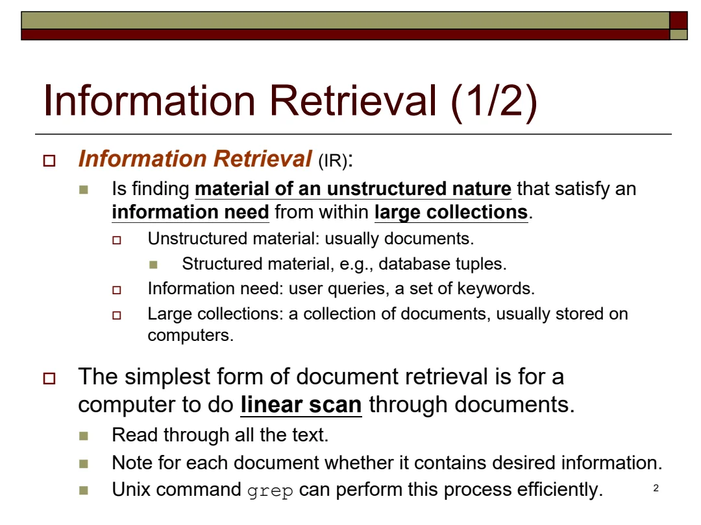
為何需要預先索引？
- 大量文件、AND／OR／NOT 與排序需求，使逐份掃描不夠理想。
- 詞項－文件矩陣以 1 表示出現、0 表示未出現；每一欄可視為文件向量。
圖表／閱讀說明：表格的列是 Antony、Brutus 等詞，欄是莎士比亞作品；右側圈出 Macbeth 欄，示範文件向量的讀法。
展開原始簡報
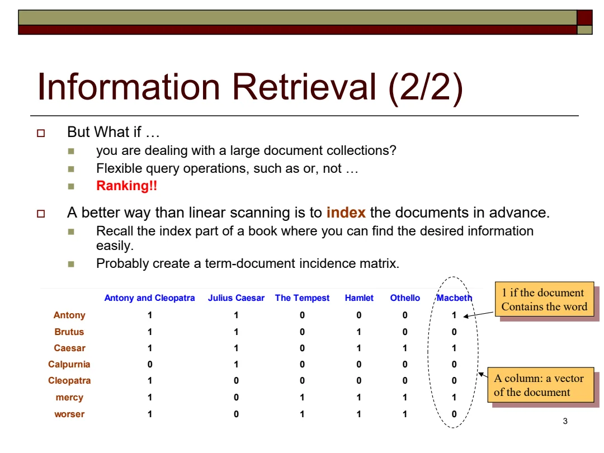
建立索引的四個步驟
- 先收集文件，再斷詞，接著進行語言前處理，最後記錄每個詞出現在哪些文件。
- 本章聚焦索引前的詞彙處理與統計特性。
圖表／閱讀說明：編號清單即處理順序：收集 → Tokenize → Linguistic preprocessing → Index。
展開原始簡報
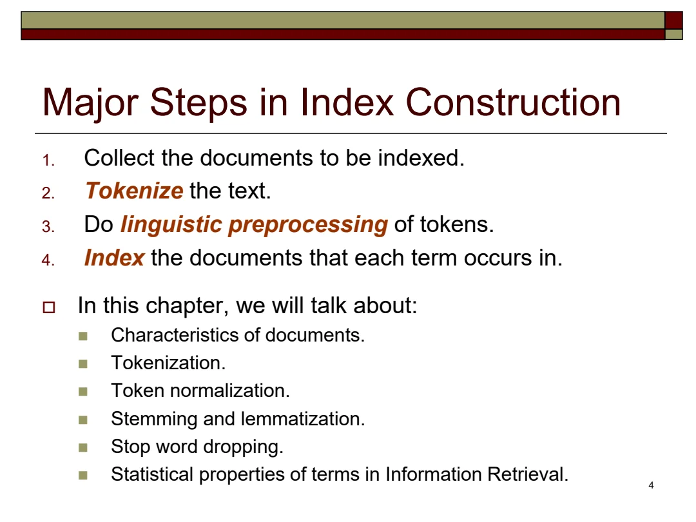
由位元組解碼成文字
- 數位文件原本是位元組序列；解析首先要知道編碼。
- ASCII、Unicode 或廠商格式需要相應解碼，才能得到正確字元。
圖表／閱讀說明：純文字概念頁；閱讀時區分 bytes 與 characters。
展開原始簡報
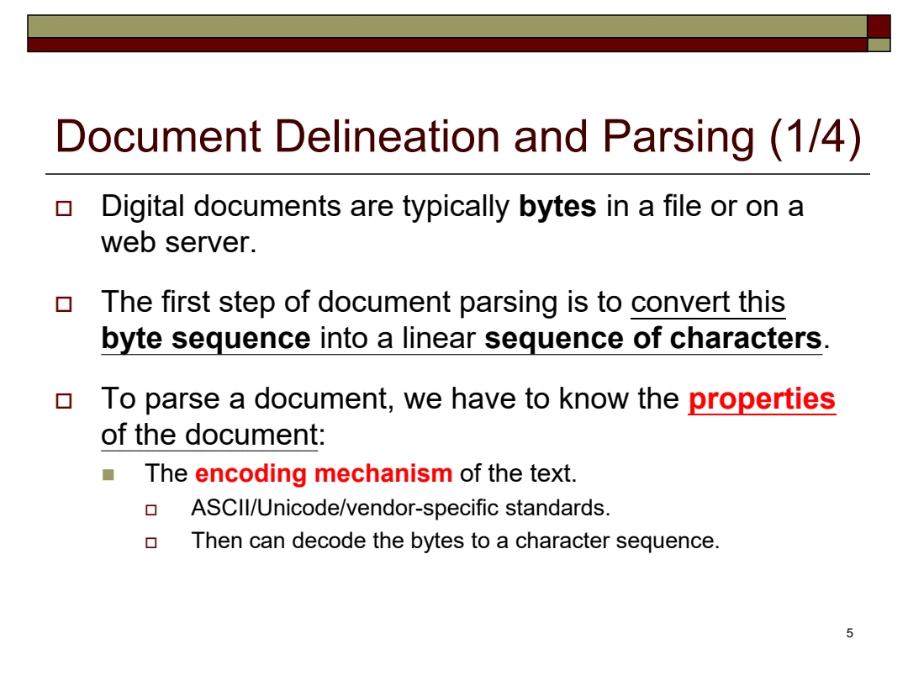
檔案格式與標記解析
- DOC、PDF、PS 等格式需要專用解析器；HTML、XML 等需從標記中抽取文字。
- 廣泛支援文件類型與編碼，是實務檢索系統的重要前置工作。
圖表／閱讀說明：頁面以二進位表示與半結構化文字作對照。
展開原始簡報
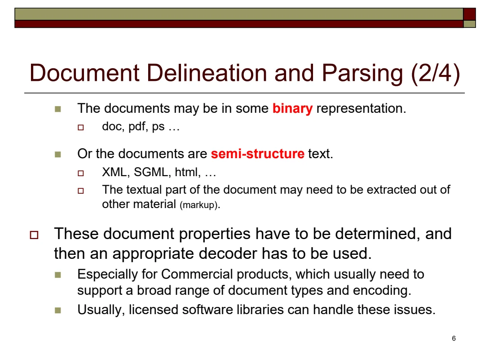
顯示順序不等於文字順序
- 阿拉伯文與數字混排會同時出現左右不同的閱讀方向。
- 即使視覺呈現有雙向特性，處理仍須恢復合理的底層字元序列。
圖表／閱讀說明：阿拉伯文句子下方的箭頭指出閱讀方向切換；不能直接以畫面由左至右當作字串順序。
展開原始簡報
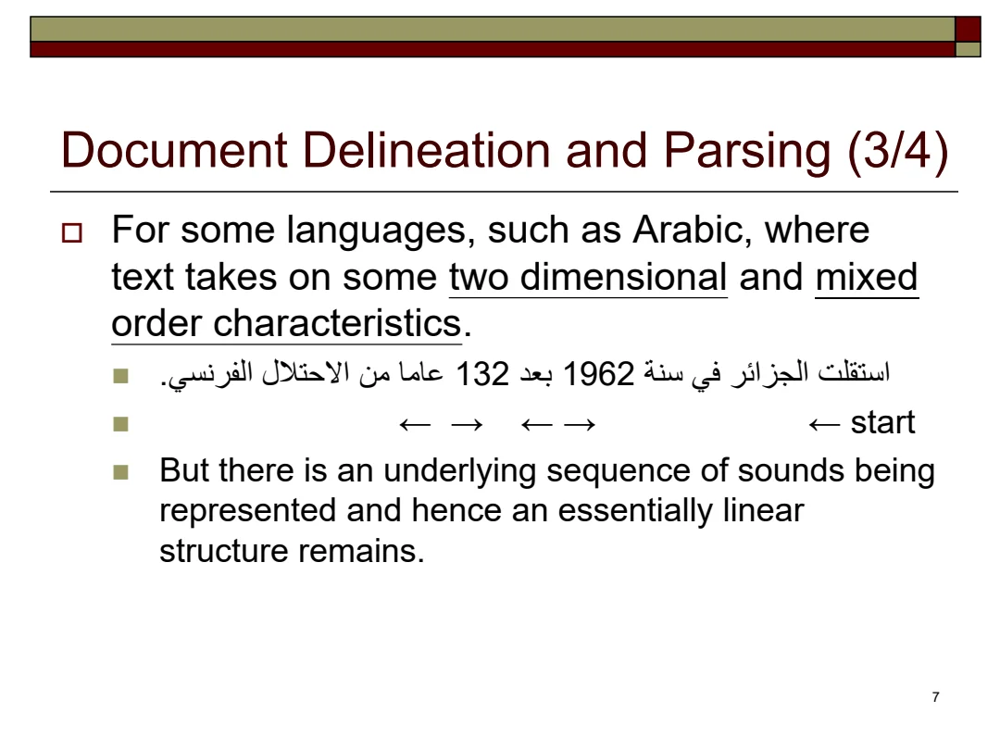
文件單位與索引粒度
- 電子郵件與附件可能要拆開，分散成多個 HTML 的同份簡報可能要合併。
- 粒度太大會混合不相關內容；太小則可能回傳過多零碎結果。
圖表／閱讀說明：以整本書、章節、段落、句子說明粒度取捨，應配合資料與使用情境。
展開原始簡報
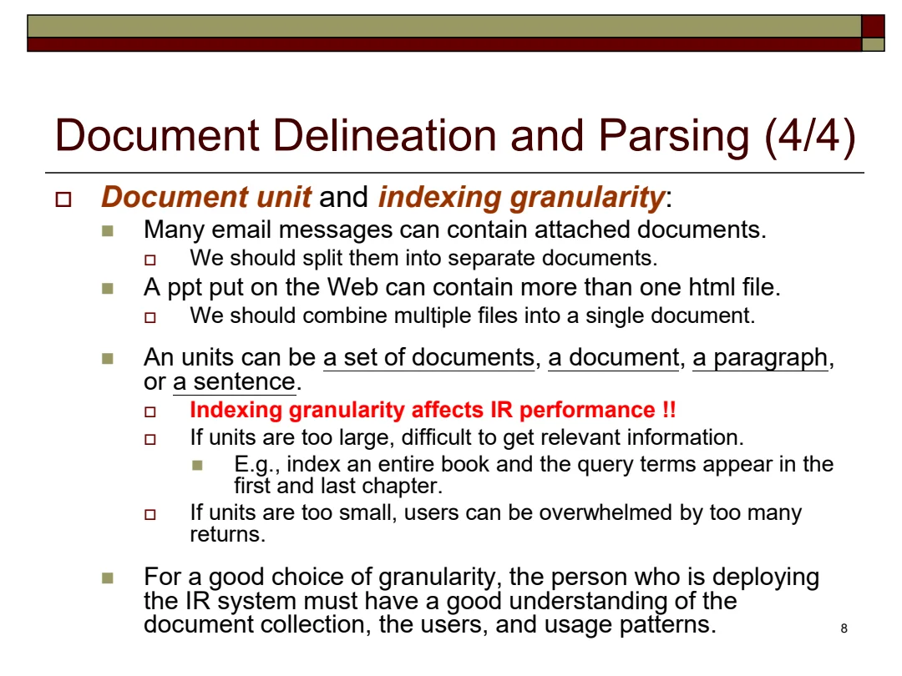
Token、Type、Term
- Token 是一次具體出現；Type 是相同字串的類別；Term 是經處理後真正加入索引的詞項。
- 斷詞將連續字元切成可處理單位，也可能移除標點。
圖表／閱讀說明：Friends, Romans… 的輸入／輸出範例展示如何把句子轉成 token 序列。
展開原始簡報
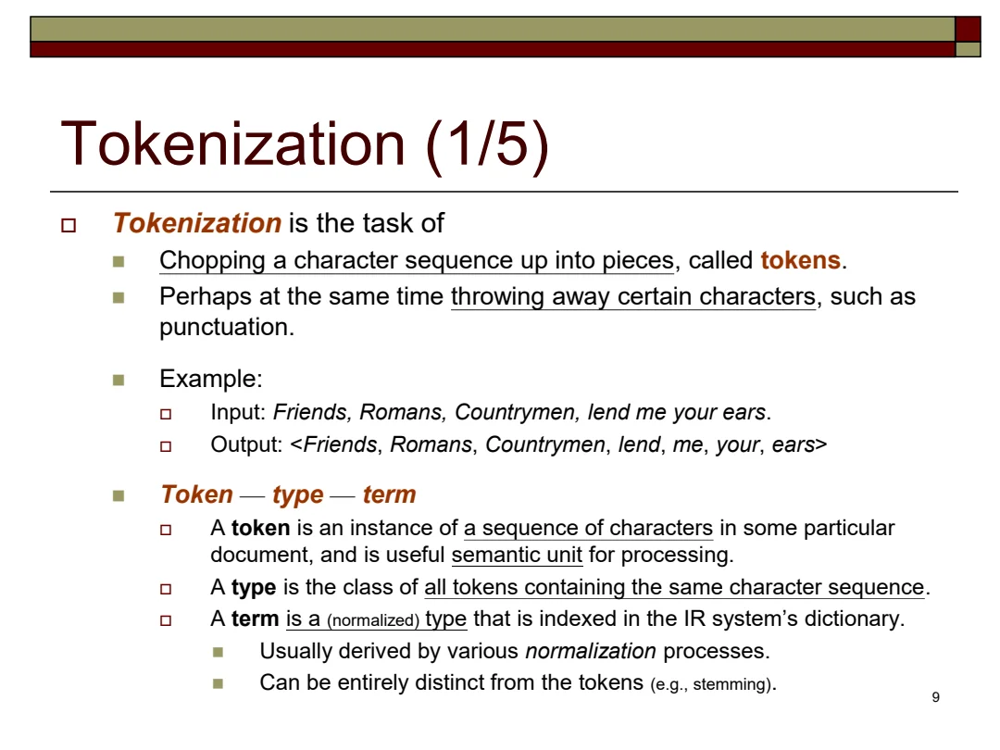
計數與錯誤切分
- 「to sleep perchance to dream」有 5 tokens、4 types；若移除 to，剩 3 terms。
- 只按非英數字切分，會破壞 O’Neal、C++、電子郵件等有效單位。
圖表／閱讀說明：箭頭範例顯示 C++ 變成 C、姓名被拆開；切分規則會直接改變可檢索內容。
展開原始簡報
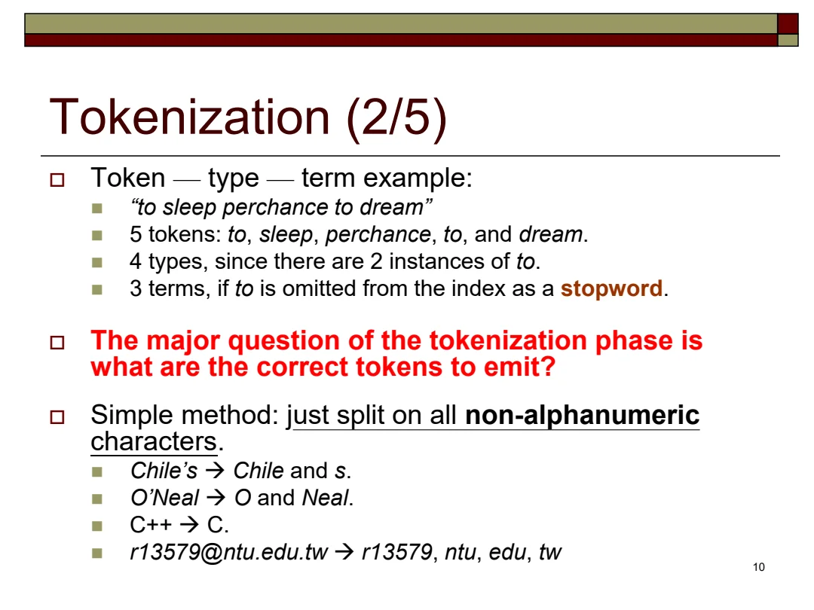
連字號的不同角色
- 連字號可能連接名稱、前綴或一整串片語，不能一律用相同規則處理。
- 可將 over-eager、over eager、overeager 視為查詢變體，但需要適當規則。
圖表／閱讀說明：以 co-worker 與長串連字片語對照，說明啟發式切分的限制。
展開原始簡報
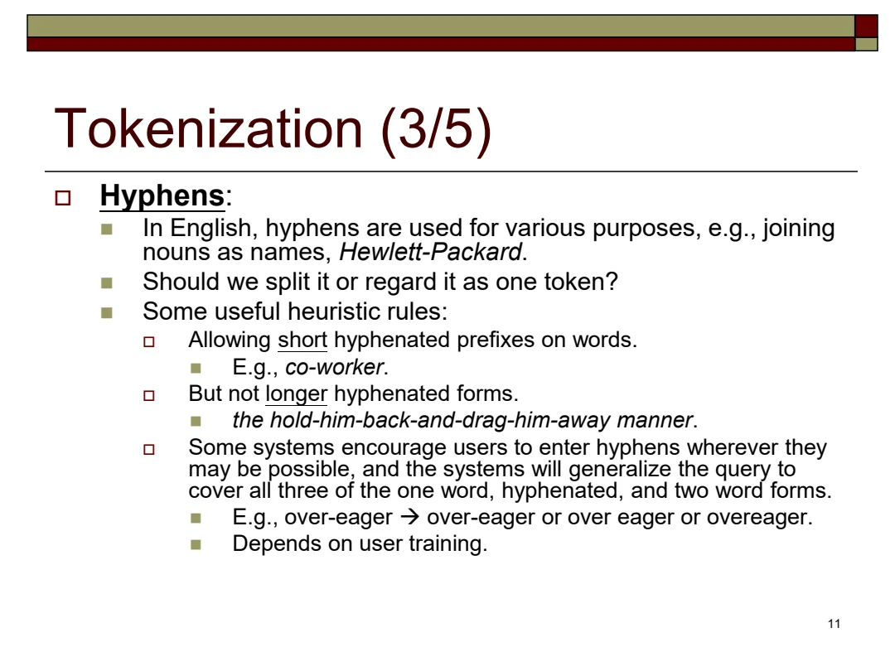
空白也不一定是邊界
- 地名、複合詞與日期可能含空白，但語意上是一個單位。
- 文件與查詢必須使用一致的斷詞規則，否則相同字串也可能無法匹配。
圖表／閱讀說明：San Francisco-Los Angles 同時含空白與連字號，展示兩種邊界問題如何交互作用。
展開原始簡報
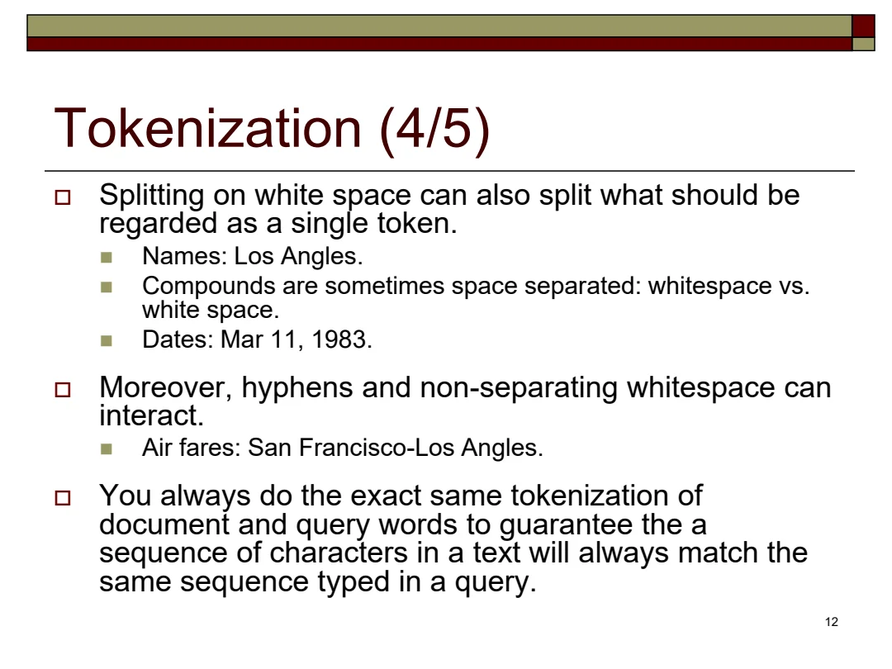
跨語言斷詞
- 德文複合詞可能需要拆分；中文等語言需要詞彙比對或序列模型來判定詞界。
- 另一條路是字元 n-gram 索引，不先決定完整詞界。
圖表／閱讀說明：「我要去總統府」展示「總統」與「總統府」的邊界歧義。原稿將多種語言概括為無空白，應視為課堂簡化。
展開原始簡報
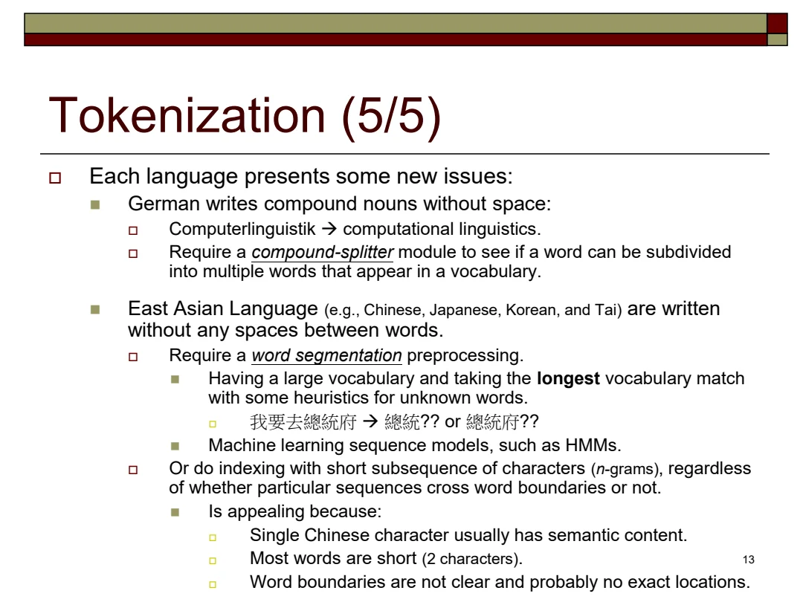
正規化的目的
- on-line／online、USA／U.S.A. 雖然字面不同，可能希望互相匹配。
- 正規化將表面不同的 token 映射到共同形式，文件與查詢兩端都要一致。
圖表／閱讀說明：兩組文字對照示範 canonicalization；這一步不等於所有近似詞都應合併。
展開原始簡報
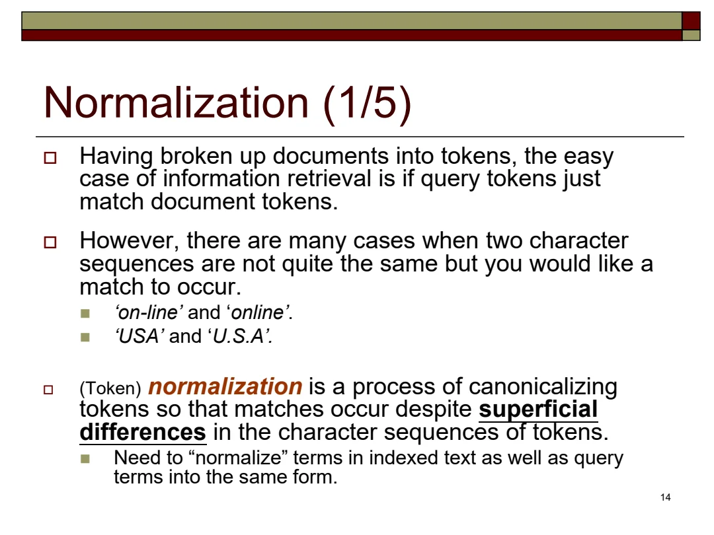
等價類與詞彙擴展
- 可透過去掉句點、連字號等規則，隱含建立等價類。
- 也可明確保存同義關係，在查詢時或建索引時擴展，如 car／automobile。
圖表／閱讀說明：頁面比較「統一表示」與「保留原詞並擴展」兩條處理路線。
展開原始簡報
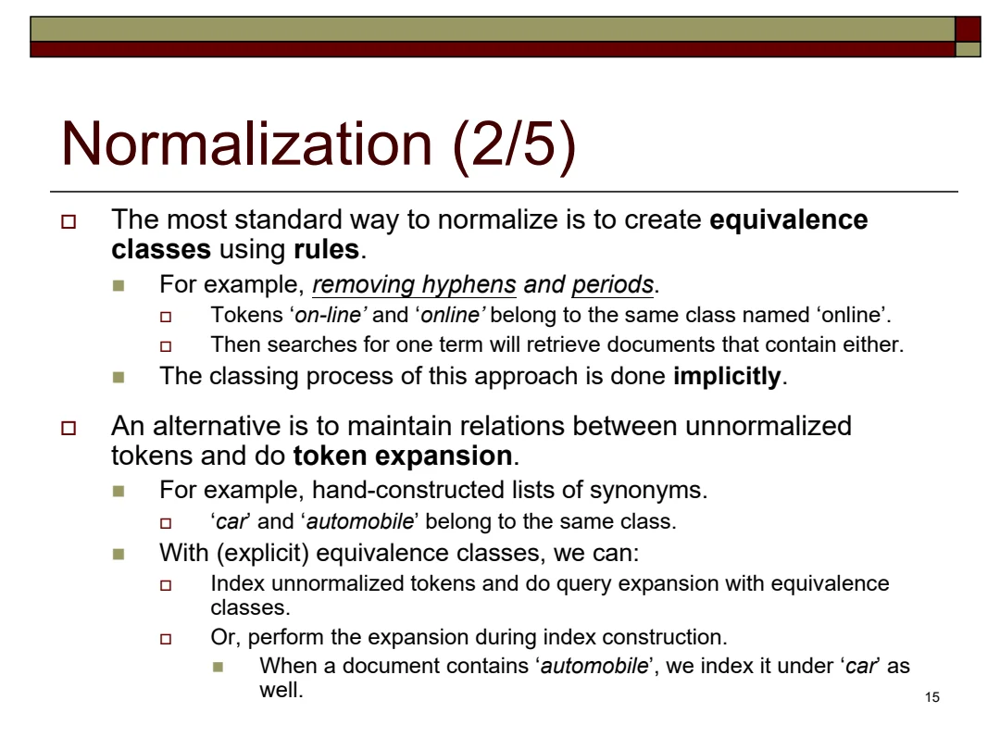
正規化過度的代價
- 移除重音與統一大小寫能增加匹配，但也可能合併原本不同的概念。
- C.A.T. → cat、Bush → bush 提醒我們召回與語意區分的取捨。
圖表／閱讀說明：各組例子展示規則的效果；大小寫是否保留應由檢索需求決定。
展開原始簡報
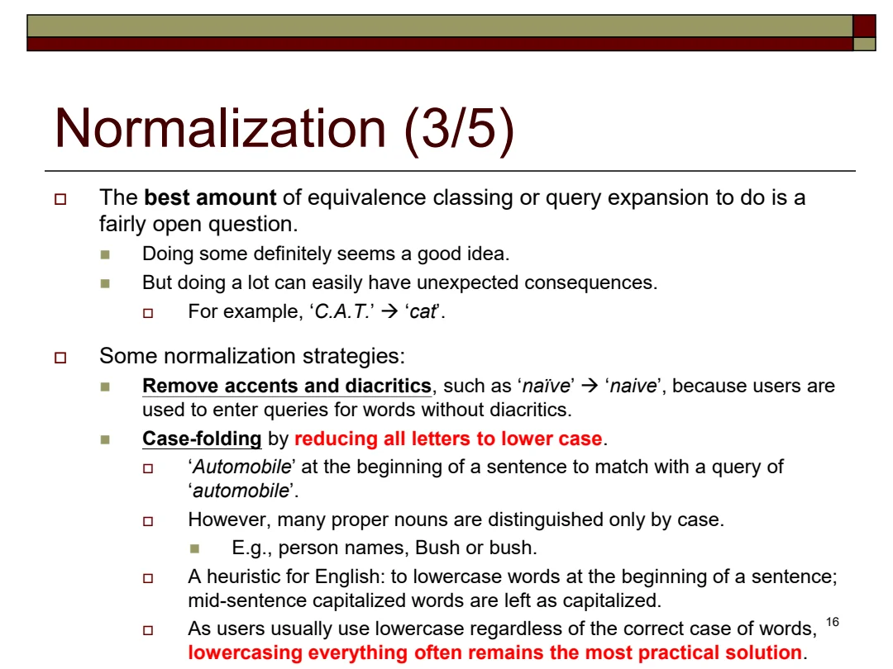
多語言需求的背景
- 本頁以英文網頁與使用者占比說明非英語檢索的重要性。
- 這些比例屬原簡報時期的背景數據，不能視為目前網路統計。
圖表／閱讀說明：純文字比例比較，重點是「資料語言」與「使用者語言」不必相同。
展開原始簡報
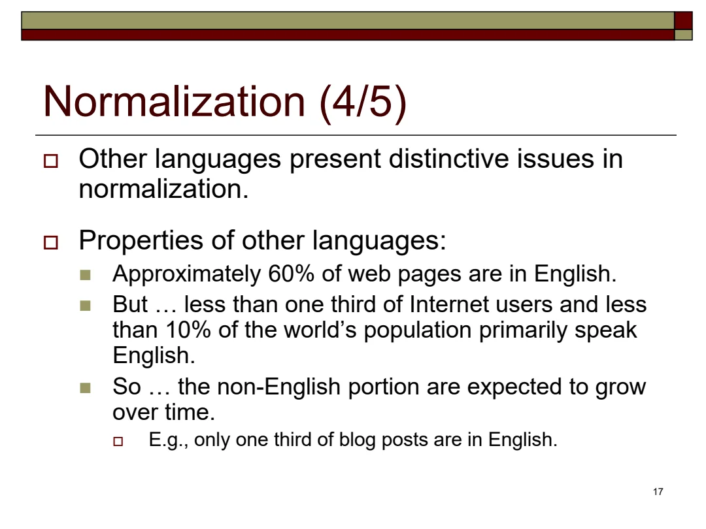
語言特有的正規化
- 法文冠詞依性別與數量變化；日文混用漢字、平假名與片假名。
- 異譯地名如 Beijing／Peking，以及多語文件，需要語言專屬處理。
圖表／閱讀說明：列舉不同文字系統與翻譯變體，說明單一正規化規則難以適用所有語言。
展開原始簡報
詞形還原的動機
- organize、organizes、organizing 等變化應能連結到共同概念。
- Stemming 與 lemmatization 都試圖在索引前減少詞形變體。
圖表／閱讀說明：car、cars、car’s、cars’ → car 是本頁的核心映射示例。
展開原始簡報
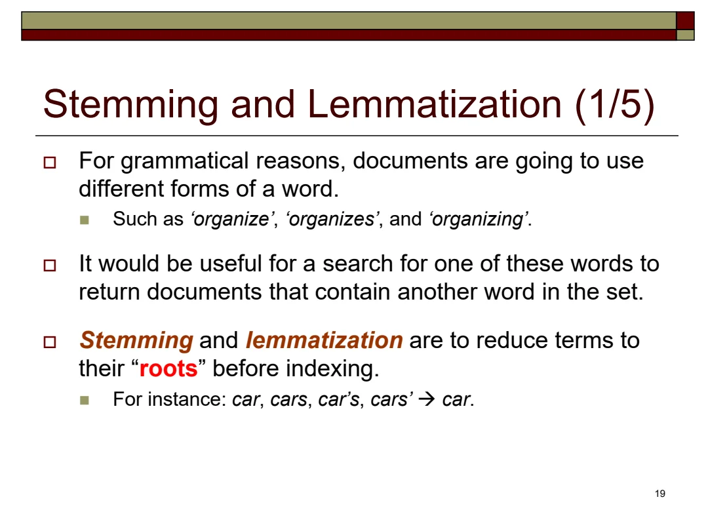
Stemming 與 Lemmatization
- Stemming 通常依字尾規則裁切，結果不必是字典中的詞，如 automat。
- Lemmatization 依詞彙與形態分析回到 lemma，如 am／are／is → be；saw 需判斷詞性。
圖表／閱讀說明：對照例子呈現規則裁切與語言分析的差異。
展開原始簡報
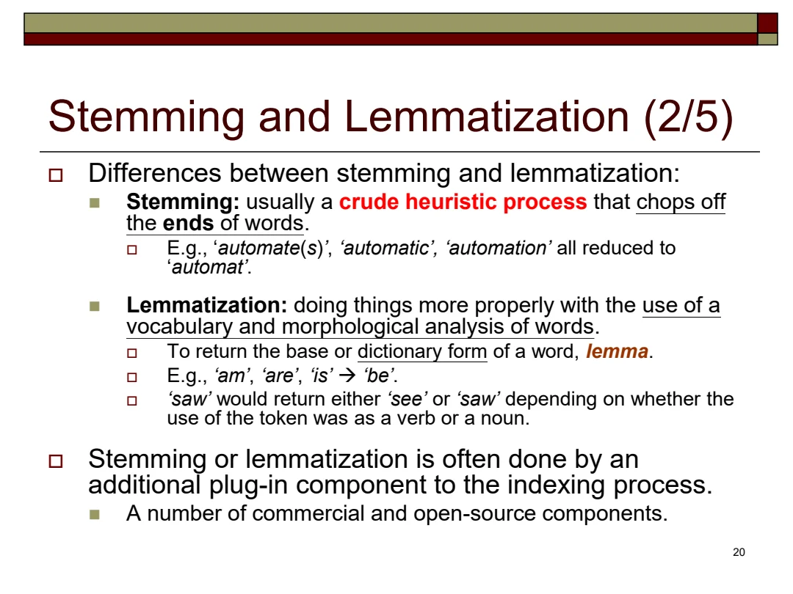
Porter 詞幹演算法
- Porter 依序執行五個詞形縮減階段，每階段有規則與選擇慣例。
- 例如 tional → tion；同階段常優先選擇符合的最長字尾。
圖表／閱讀說明：national → nation 示範一條規則的輸入與輸出。
展開原始簡報
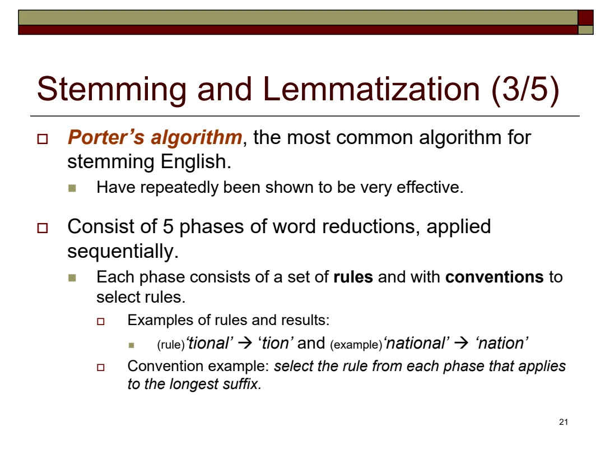
裁切也要檢查剩餘長度
- 詞的 measure 用來約束裁切，避免把過短的詞過度縮減。
- 條件 m > 1 時移除 ement：replacement → replac，但 cement 保留。
圖表／閱讀說明：兩個字尾相同、結果不同的例子，強調條件判斷比單純字串取代更重要。
展開原始簡報
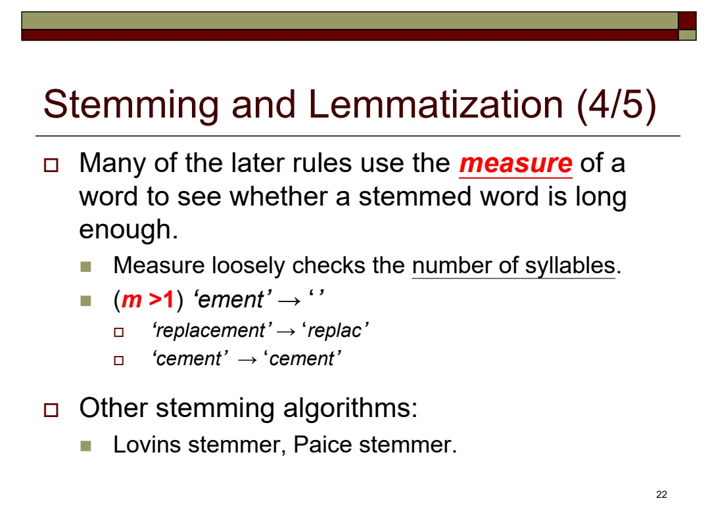
召回與精確率的取捨
- 詞形還原有時提高召回，但合併語意不同的用法也可能降低精確率。
- operating system 的查詢可能匹配到 operate 與 system 分別出現的句子。
圖表／閱讀說明：本頁以 oper 詞幹示範誤合併；較完整形態分析不必然帶來同等幅度的檢索改善。
展開原始簡報
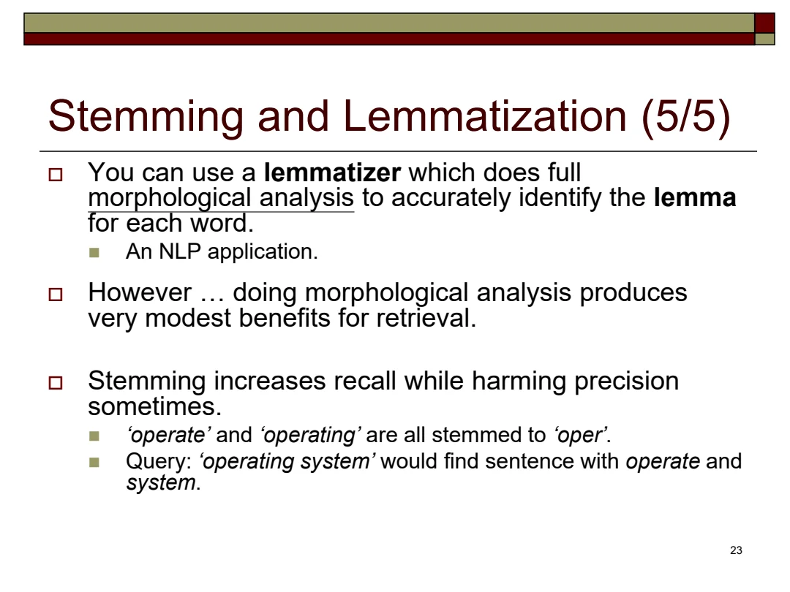
停用詞與集合詞頻
- 常見功能詞可能缺乏區分文件的能力，可列入 stop list。
- 常見作法是依 collection frequency 排序，再由專家協助挑選停用詞。
圖表／閱讀說明：a、an、and 等清單是示例；CF 計算整個集合中出現的總次數。
展開原始簡報
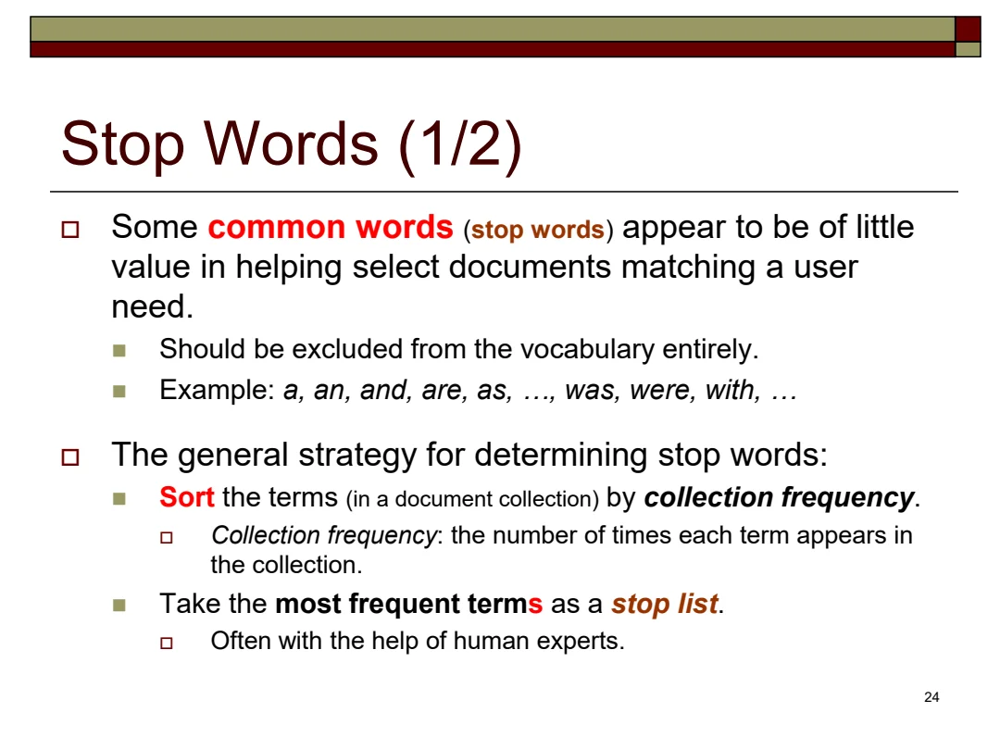
移除停用詞的風險
- 歌曲或書名如 Let it be、To be or not to be 大量使用功能詞，刪除會破壞查詢。
- 簡報介紹停用詞清單縮小的歷史趨勢，並指出 TF-IDF 可降低常見詞的權重。
圖表／閱讀說明：對比一般旅遊查詢與作品名稱，說明 stop list 應依任務設計；原稿的搜尋引擎概述屬當時背景。
展開原始簡報
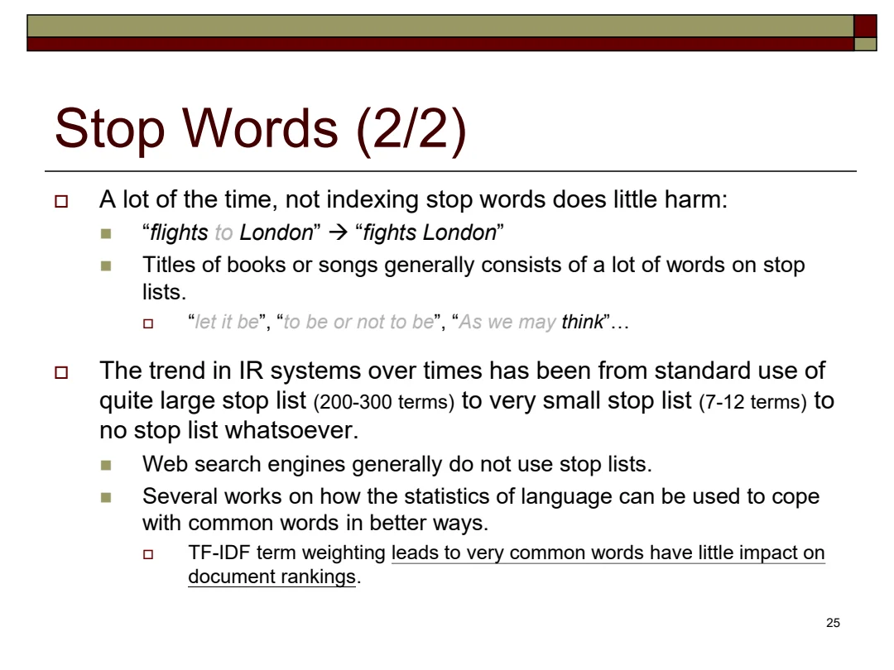
完整索引流程圖
- 文字經 Tokenizer 變成 tokens，再由語言模組轉成 terms，最後寫入倒排索引。
- 倒排索引以詞項為入口，連到包含它的 docID 清單。
圖表／閱讀說明：圖由上往下：Friends／Romans／Countrymen → friend／roman／countryman → 各自的文件串列。
- 先看原句如何被切開。
- 再比較詞形處理前後。
- 最後沿箭頭讀出每個詞對應的 docID。
展開原始簡報
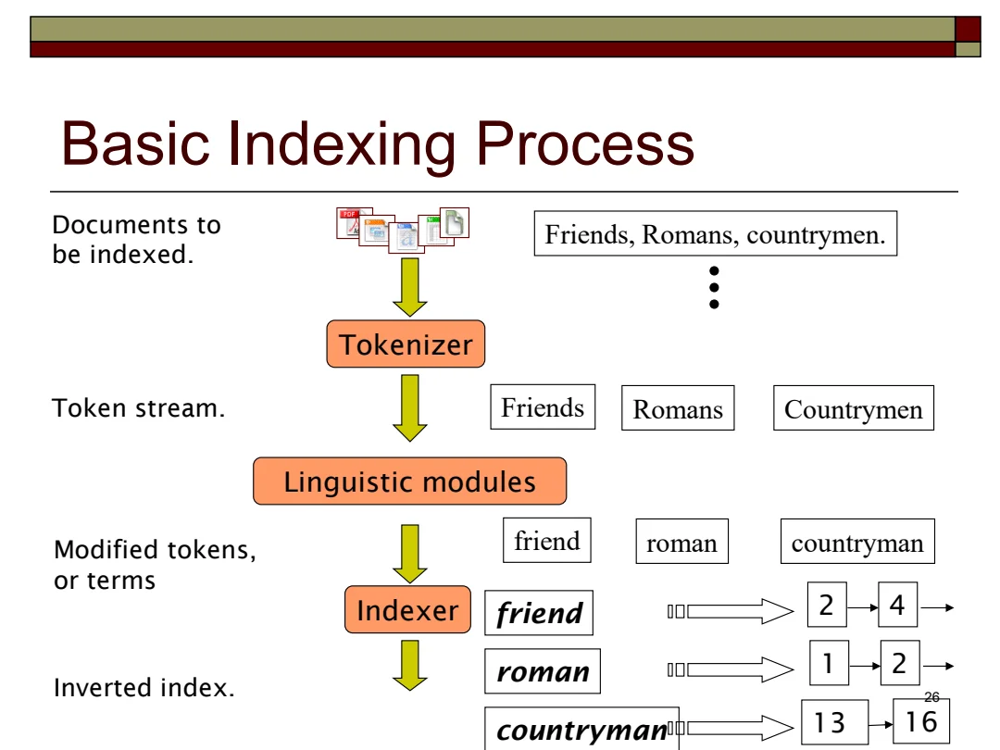
詞典有多大？
- 一般字典無法涵蓋所有人名、地名、產品與科學名稱。
- IR 詞彙量必須依實際文件集合估計，不能把既有字典大小當固定上限。
圖表／閱讀說明：OED 超過 60 萬詞的例子用來引出估計問題，不代表所有檢索詞都在字典內。
展開原始簡報
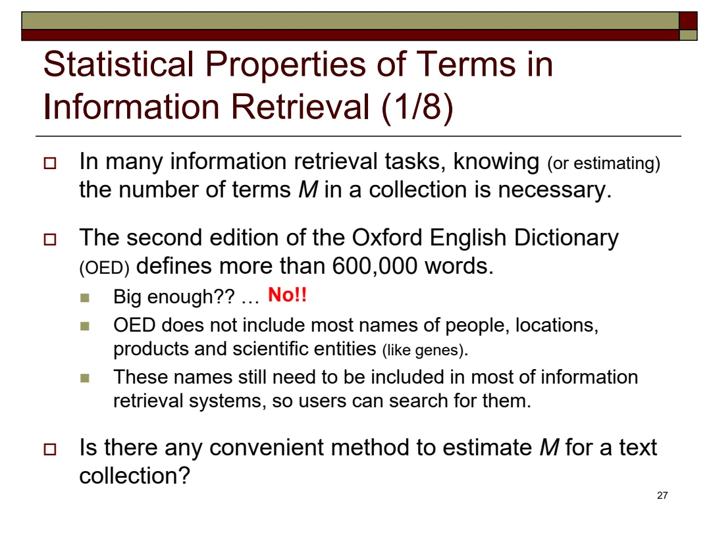
Heaps’ Law
- 詞彙量 M 約為 kT^b；T 是 token 總數，k、b 是依資料決定的參數。
- 取對數後 log M = b log T + log k，因此在 log-log 圖呈近似直線。
圖表／閱讀說明：公式註解區分詞彙數 M 與 token 數 T；原稿給出 k 約 30–100、b 約 0.5 的典型範圍。
展開原始簡報
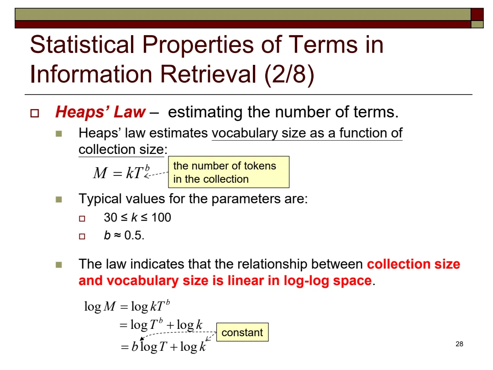
Heaps 定律的資料驗證
- Reuters-RCV1 範例採 k = 44、b = 0.49，在較大 T 時擬合良好。
- T = 1,000,020 時預估約 38,323 詞，實際 38,365 詞。
圖表／閱讀說明：橫軸 log₁₀T、縱軸 log₁₀M；實際曲線與擬合直線接近，顯示次線性增長而非固定詞彙上限。
展開原始簡報
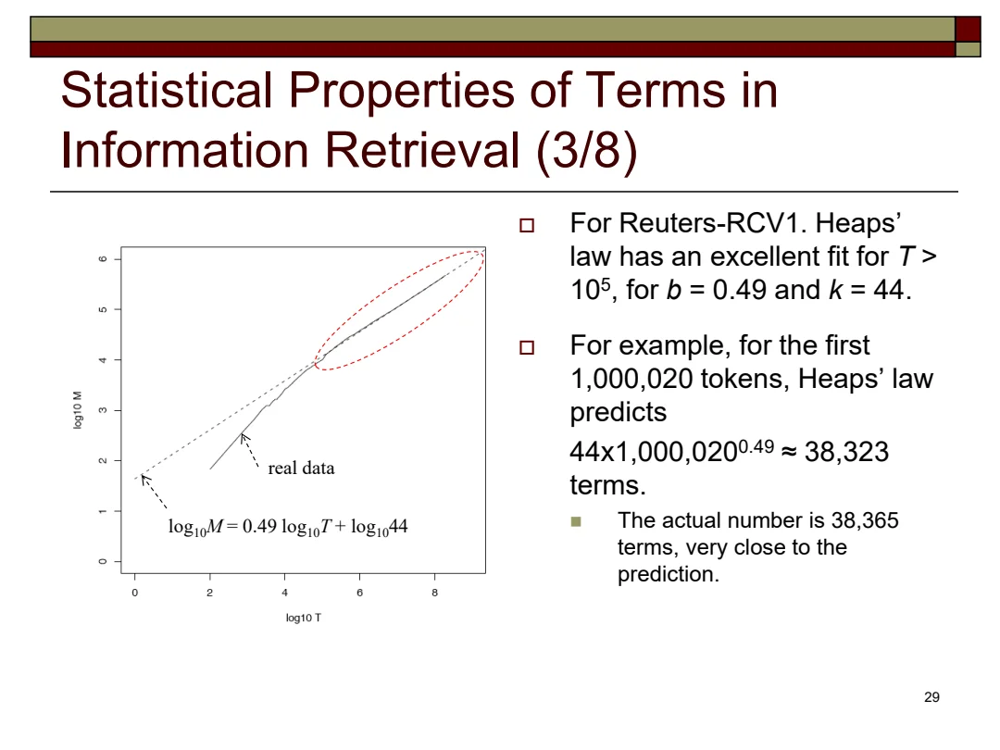
前處理會改變詞彙量
- 大小寫合併、stemming 會減少不同詞形；數字與拼字錯誤則可能增加詞彙。
- Heaps 模型描述隨集合擴大持續增長的趨勢，不應當作所有資料的精確定律。
圖表／閱讀說明：純文字歸納：估計參數取決於資料處理方式與語料特性。
展開原始簡報
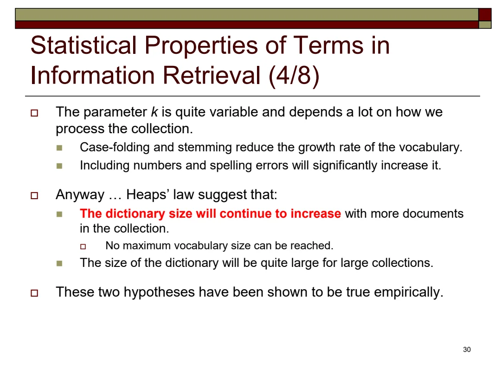
Zipf’s Law
- 依集合詞頻由高到低排名，排名 i 的詞頻 cfᵢ 約與 1/i 成正比。
- 等價地說，cfᵢ × i 約為常數，描繪少數高頻、多數低頻的分布。
圖表／閱讀說明：公式 cfᵢ ∝ 1/i；排名是頻率名次，不是文件編號。
展開原始簡報
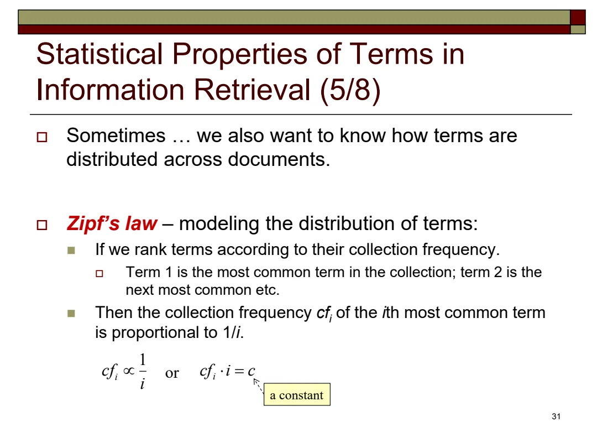
Zipf 的數值例子
- 若理想 Zipf 成立，第 2 名詞頻約為第 1 名一半，第 50 名約為第 150 名三倍。
- Tom Sawyer 表中 cfᵢ × i 並非完全相同，顯示這是近似規律。
圖表／閱讀說明：表格比較詞、詞頻、排名與乘積；不要把每列當成精確反比例。
展開原始簡報
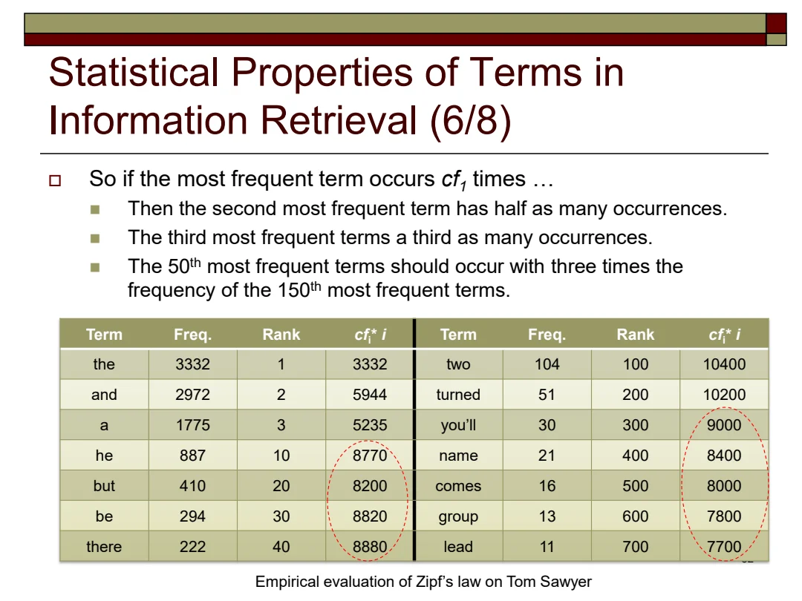
Zipf 的 log-log 圖
- Zipf 可寫成 cfᵢ = c·i⁻¹，取對數後斜率約 −1。
- Reuters-RCV1 實際資料與直線仍有差距，可用來粗估而非精確預測。
圖表／閱讀說明：橫軸 log rank、縱軸 log cf；實際曲線彎離理論線，指出尾端與頭部的偏差。
展開原始簡報
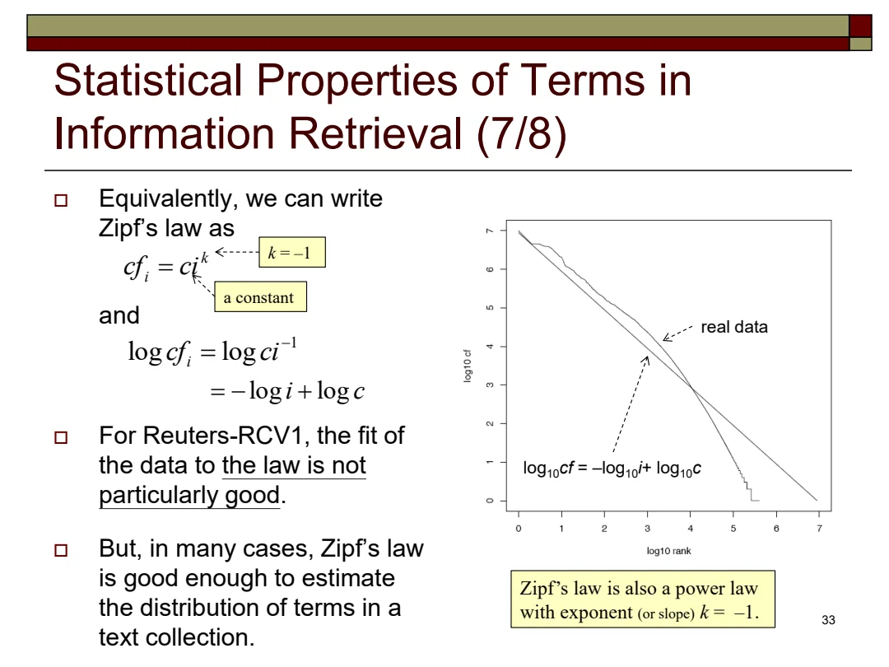
長尾與資料稀疏
- 少數詞大量出現，但大多數詞只有少量觀測。
- 這種長尾使統計文字模型難以可靠估計低頻事件，銜接後續平滑方法。
圖表／閱讀說明：頻率－排名曲線先陡降再拉長尾巴；左側是高頻詞，右側是大量稀疏詞。
展開原始簡報
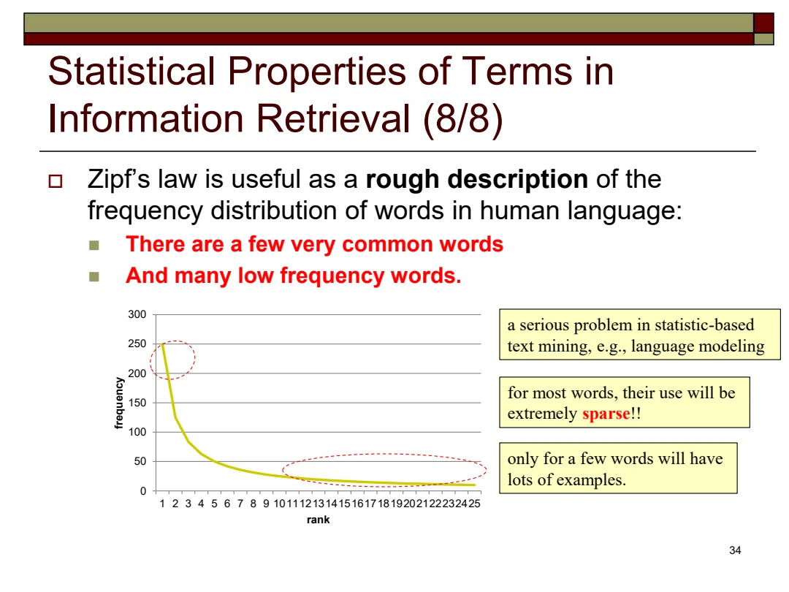
02 PAT Tree 與中文關鍵字
來源：02_Pattree and Chinese Keyword Extraction.pdf
CH 02 / PDF 01PAT Tree 與中文關鍵字抽取
- 本章先介紹以 sistring 建立的 PAT Tree，再說明中文關鍵字抽取流程。
- 封面列出 Gonnet 等人的索引章節與 Chien 1997 SIGIR 論文。
圖表／閱讀說明：封面參考文獻是課程來源；下半部研究內容另有分隔封面。
展開原始簡報
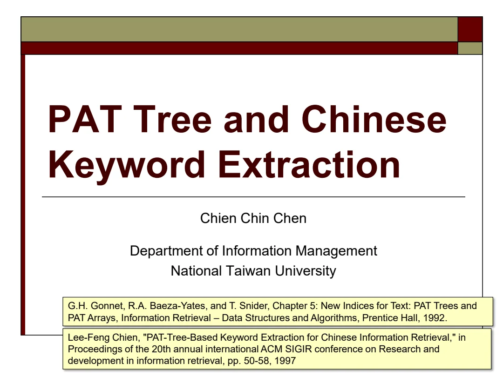
不先依賴「詞」的索引
- 傳統檢索需先抽取關鍵字，抽錯會限制可查詢的內容。
- PAT Tree 直接以文字字串建索引，不必預先定義詞界。
圖表／閱讀說明：條列比較關鍵字索引的限制與字串索引的動機。
展開原始簡報
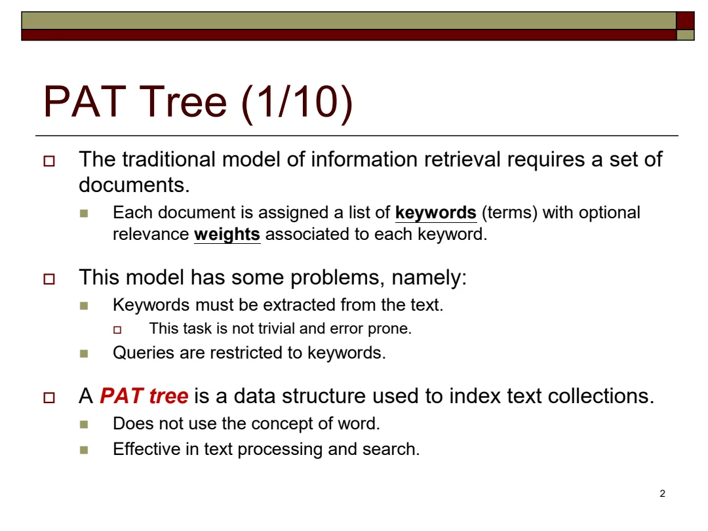
什麼是 Sistring？
- Sistring 從文字的某一位置開始，向右延伸到需要的長度。
- 每個 sistring 可用起始位置識別，不必儲存一份完整複本。
圖表／閱讀說明：Once upon a time 的範例依序移動起點；sistring 1、2、3 是不同起點的後綴式字串。
展開原始簡報
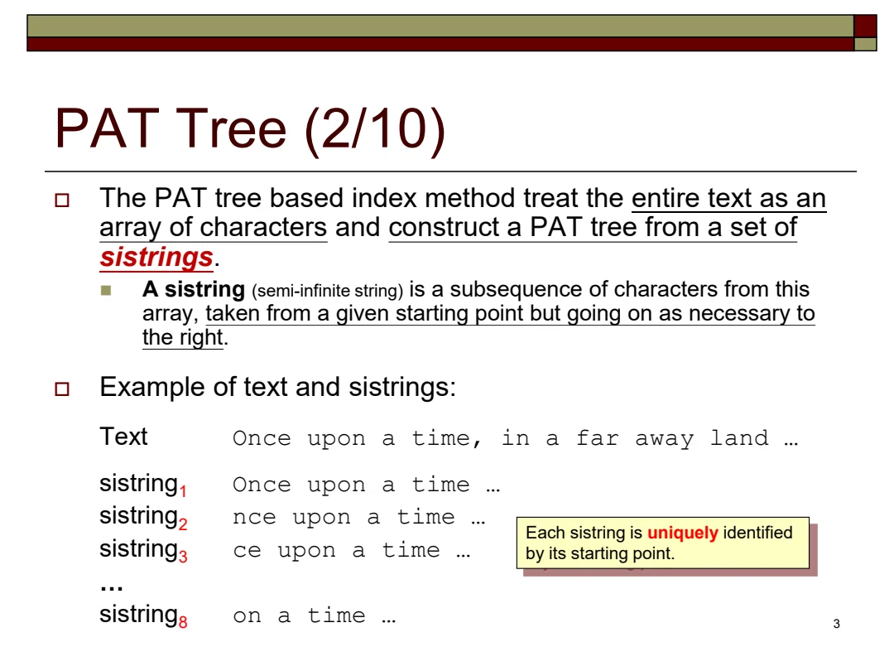
以位元理解 Sistring
- 將文字暫視為位元序列，便能用 0／1 分支解釋 PAT Tree。
- 0110010001011… 的各 sistring 由不同位置開始。
圖表／閱讀說明：每行比上一行向右移動一個起點；此頁是位元模型，不是實際中文編碼規格。
展開原始簡報
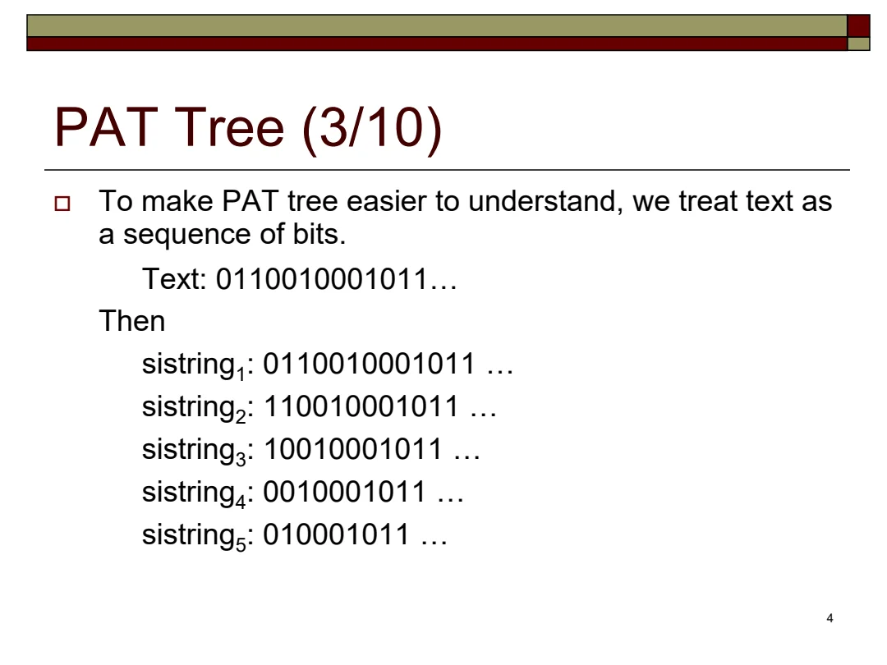
PAT Tree 的節點與分支
- 內部節點標記要檢查的位元位置；0 往左、1 往右；外部節點標記 sistring 起點。
- 壓縮樹可能略過不產生分支的位元，因此路徑不會逐位檢查。
圖表／閱讀說明：圓形是比較位元、方形是起點。查詢 00101 依位元 1、2、3、5 前進；候選起點 4 最後仍須核對原字串。
- 先從根節點讀查詢第 1 位。
- 按節點指定的位置選左右分支。
- 到葉節點後比對完整查詢，檢查被跳過的位元。
展開原始簡報
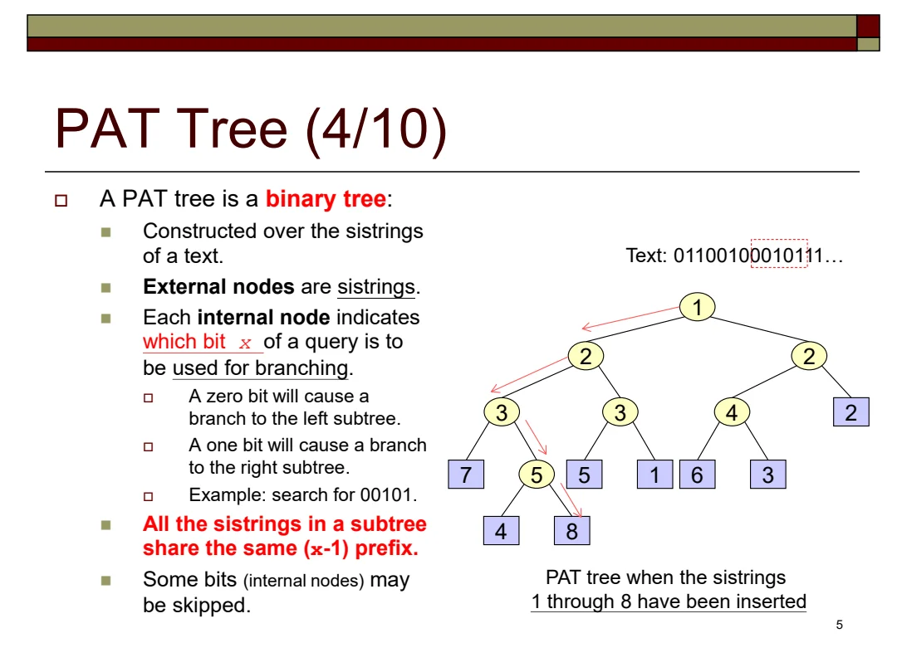
為何還需要最後比對？
- 查詢 00111 可能走到候選位置，但原字串不符合，應回報無結果。
- 前綴 00 匹配整個子樹，得到 sistring 4、7、8。
圖表／閱讀說明：與上一頁同一棵樹，重點由「走路徑」轉成「驗證候選」；壓縮節點不保證略過位元相同。
展開原始簡報
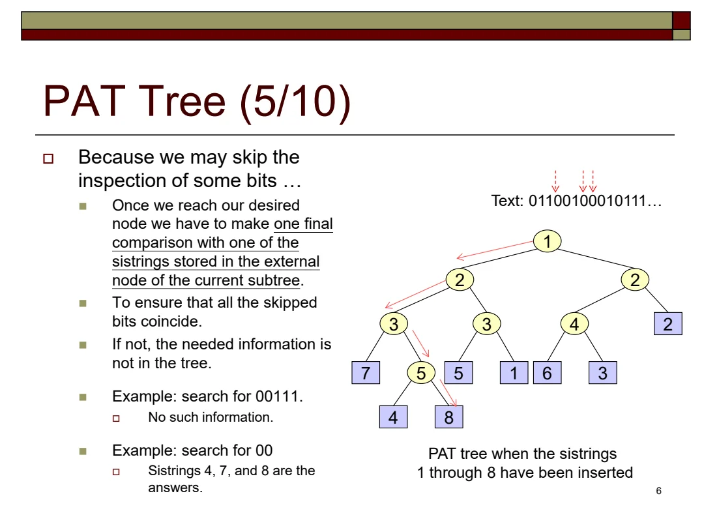
PAT Tree 的空間規模
- 沒有實際分歧的單子節點會被消除，所有內部節點都有兩個分支。
- 在 n 個不同索引起點的基本模型中，有 n 個外部節點、n−1 個內部節點，空間為 O(n)。
圖表／閱讀說明：純文字結構分析；後續重複 sistring 的實作會另外用位置串列記錄。
展開原始簡報
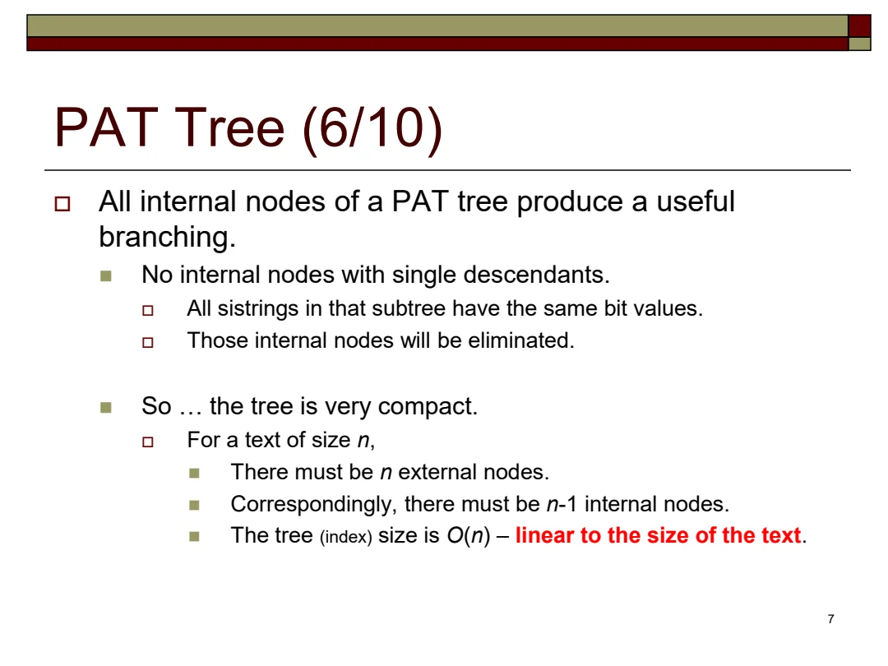
插入演算法：空樹與內部節點
- 空樹直接建立外部節點；遇內部節點先比對共同前綴。
- 前綴相同則按指定 bit 遞迴；不同則在首次分歧處新增父節點。
圖表／閱讀說明：程式框顯示三種情況：空、沿既有分支前進、在較高位置新增分支。
展開原始簡報
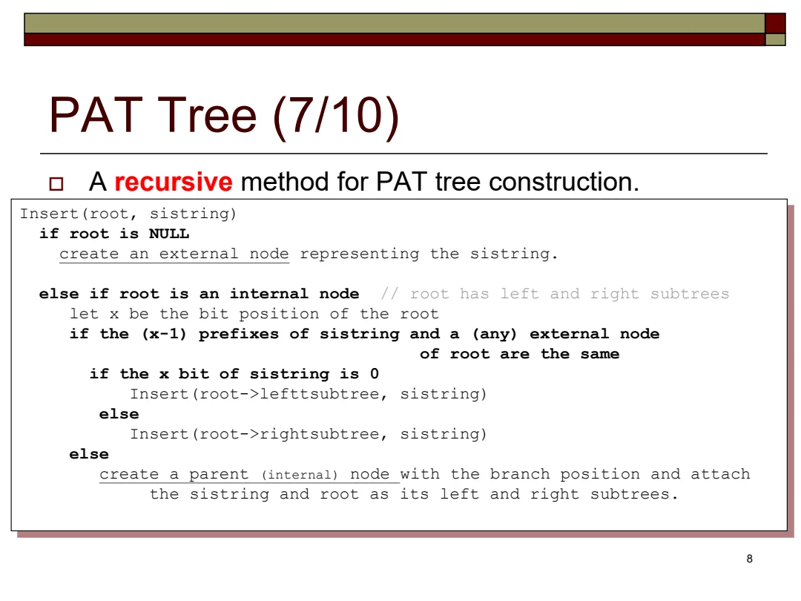
插入演算法：遇到葉節點
- 比較新 sistring 與既有葉節點，找第一個不同位元。
- 以該位元建立共同父節點，將兩者分別放到左右子樹。
圖表／閱讀說明：延續上一頁的 else 分支；葉節點不被覆寫，而是改掛在新內部節點下。
展開原始簡報
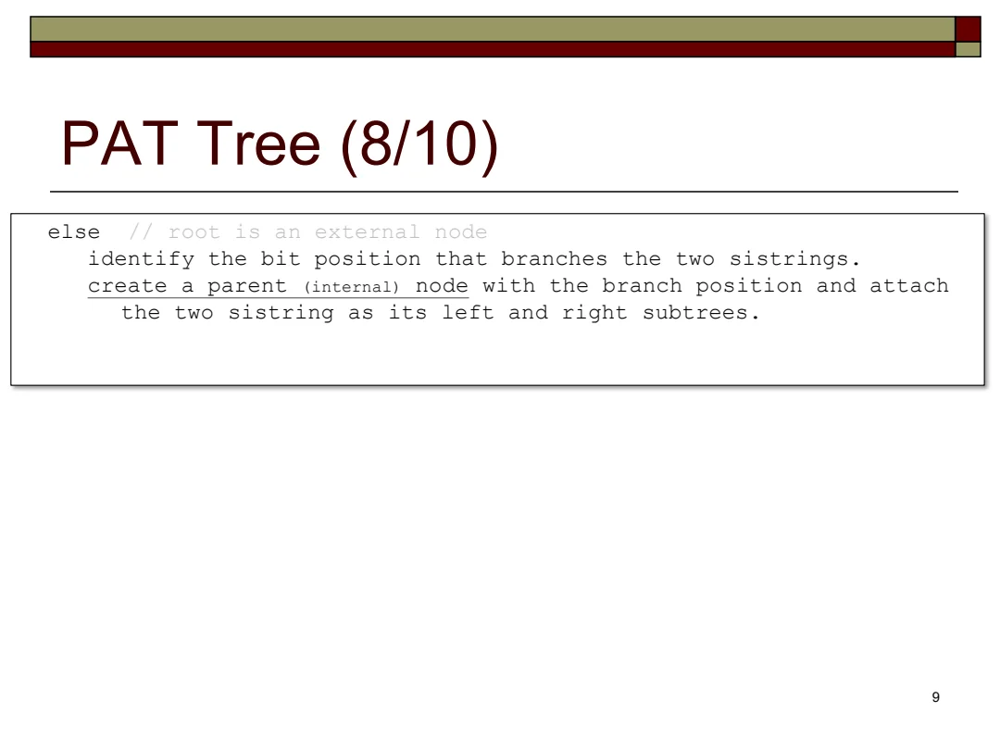
逐步建樹示例
- 文字 00010011… 依序插入 sistring 1 至 5。
- 每次新增的比較節點取決於第一個分歧位元，可能插入到現有節點上方。
圖表／閱讀說明：左至右五個樹狀快照是靜態建構步驟；圓形數字是 bit 位置，方形數字是起點。
- 插入 1：建立葉 1。
- 插入 2：第 3 位分歧，建節點 3。
- 插入 3：第 2 位分歧，建新根 2。
- 插入 4：第 1 位分歧，建新根 1。
- 插入 5：在左側相應子樹內，於第 4 位新增分支。
展開原始簡報
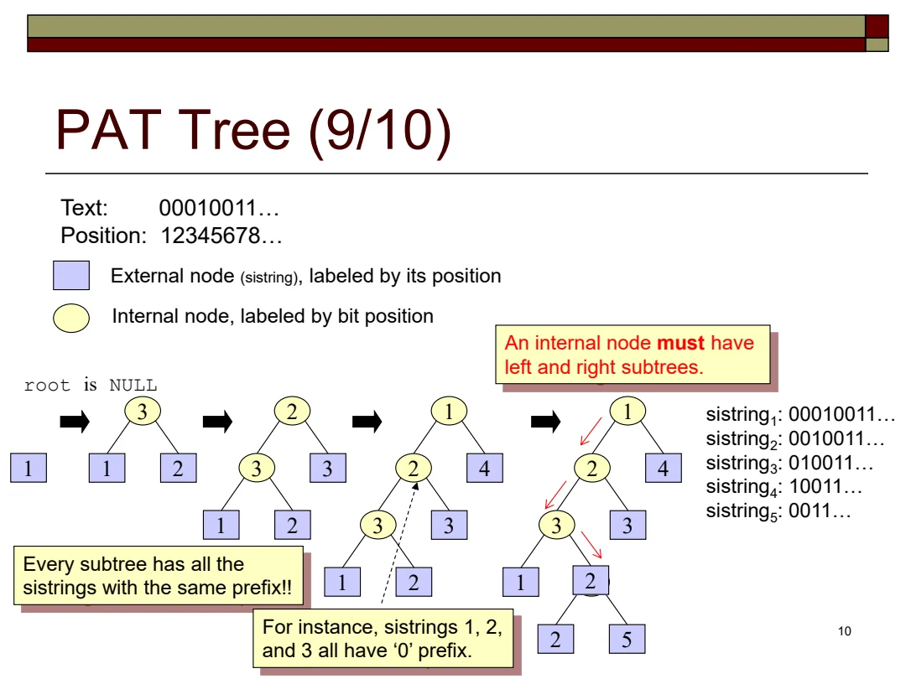
只索引需要的起點
- 若只關心詞或字元起點，可省去其他不需要的位元起點。
- 索引起點的選擇取決於預期查詢單位。
圖表／閱讀說明：圖以「台／灣／的」對應位元 1、9、17，明確是假設每字 8 bits 的教學示例，不是實際中文字元編碼。
展開原始簡報
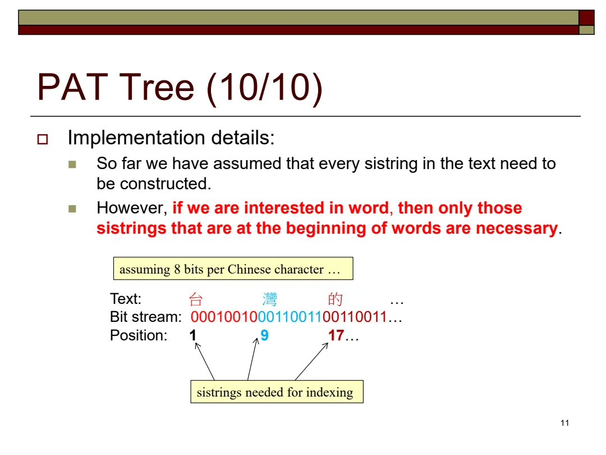
前綴搜尋
- 沿查詢位元走訪，直到用完前綴或到達外部節點。
- 取候選子樹任一 sistring 檢查完整前綴，通過才回傳該子樹的位置。
圖表／閱讀說明：節點 3、7、11 表示跳躍比較；共同的前 10 bits 也可能與查詢不同，所以最後驗證不可省。
展開原始簡報
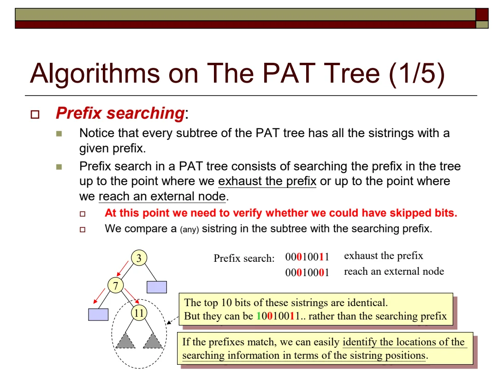
搜尋成本與結果數量
- 簡報在隨機 PAT Tree 假設下給出樹高 O(log n)，查詢常受前綴長度限制。
- 節點預存子樹大小，可迅速取得匹配次數。
圖表／閱讀說明：要區分定位子樹與列舉所有結果；輸出大量位置本身仍需時間，O(log n) 並非所有樹的最壞保證。
展開原始簡報
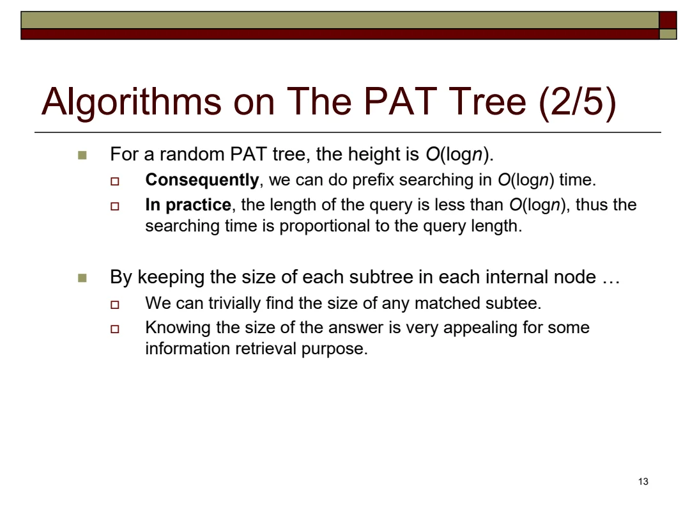
鄰近搜尋 Proximity Search
- 先各自找到 s₁、s₂ 的所有位置，再檢查是否落在指定字元距離內。
- 將較小結果集合排序，逐一對另一集合做位置查找。
圖表／閱讀說明：條列順序就是算法流程：查字串 → 排較小集合 → 比較距離。
展開原始簡報
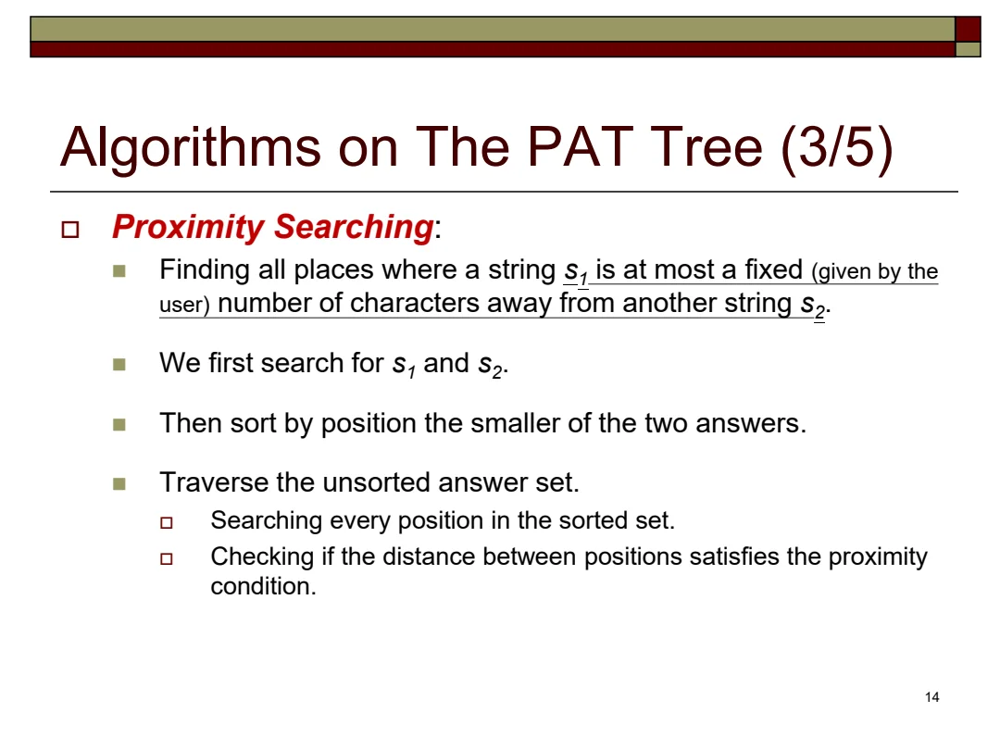
找出最常見的 Trigram
- 長度三字元的模式對應具有相同前三字元的子樹。
- 以每字 8 bits 的假設，跨過第 24 位邊界時比較子樹大小。
圖表／閱讀說明：偽碼 root.bit > 24 時停止下探並計數，否則繼續左右遞迴；葉節點實作仍需終止條件。
展開原始簡報
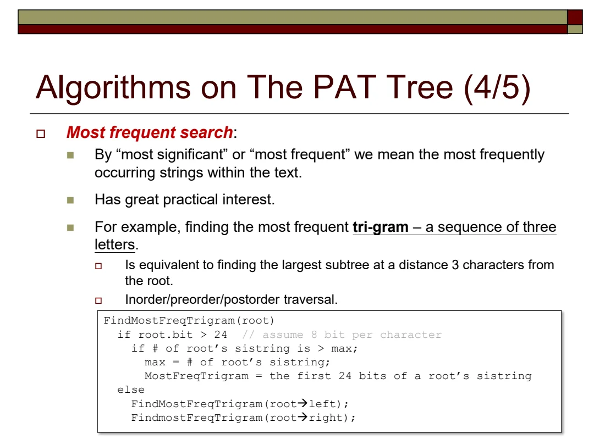
Trigram 走訪示意
- 節點 19、21 尚未超過 24，繼續展開；節點 26、25、27 已超過邊界，可統計整個子樹。
- 比較這些候選子樹的大小，選出最高頻的前三字元。
圖表／閱讀說明：紅色箭頭展示遞迴路線，藍色三角形代表已可整批計數的子樹。
- 先到 bit 19，再查看左支 bit 26。
- 26 > 24，計數且停止下探。
- 返回 bit 21，分別統計 25 與 27 的子樹。
- 同理處理右子樹並比較最大值。
展開原始簡報
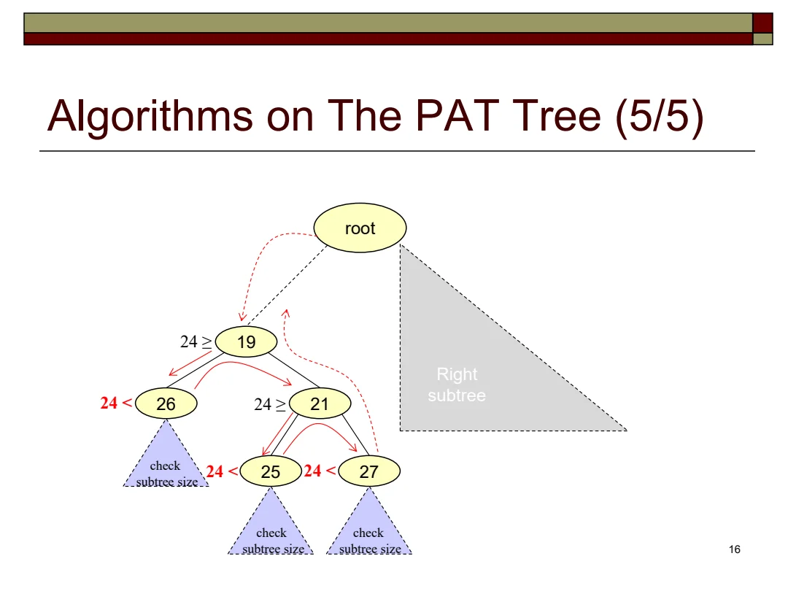
中文關鍵字研究分隔頁
- 接下來聚焦 Lee-Feng Chien 在 SIGIR 1997 的 PAT Tree 中文關鍵字抽取研究。
- 前半的索引結構將作為頻繁字串發掘工具。
圖表／閱讀說明：這是分段封面，不是新增算法步驟。
展開原始簡報
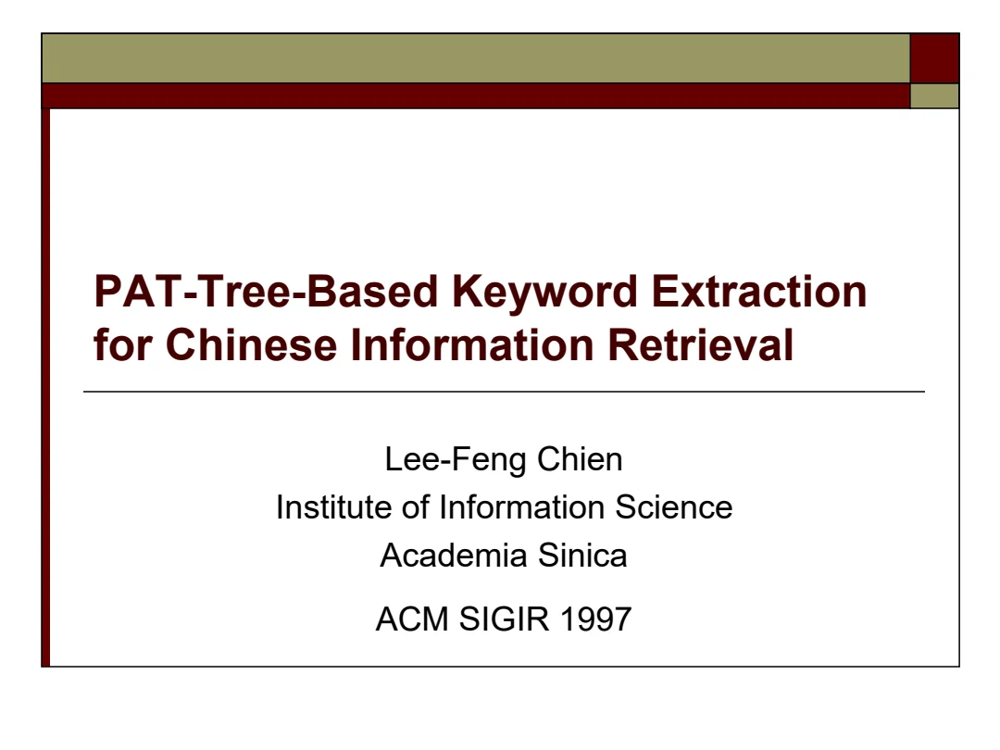
中文檢索的語言差異
- 非結構化中文資料需要有效搜尋，但不能直接照搬英文的空白切詞。
- 缺乏明確詞界是本章要處理的核心問題。
圖表／閱讀說明：純文字介紹研究背景，屬原論文時期脈絡。
展開原始簡報
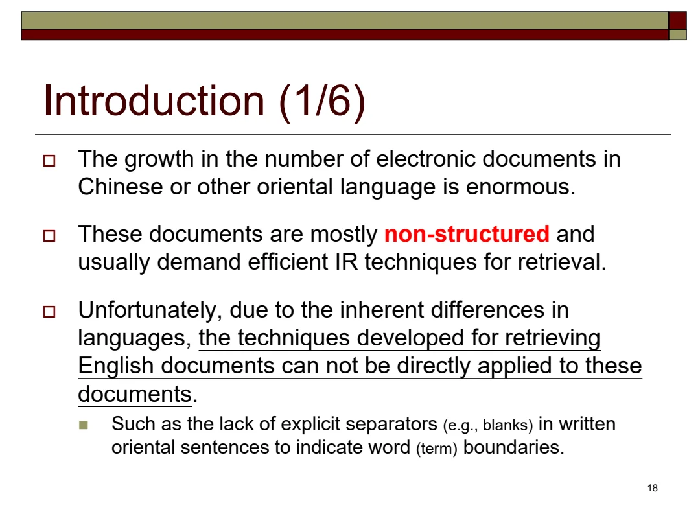
未知詞與專有名詞
- 中文關鍵字抽取同時面對詞界不明與未知詞問題。
- 人名等新詞很難依固定規則完整列出。
圖表／閱讀說明：兩項困難對應後續「不依賴固定詞典」的設計。
展開原始簡報
字元方法與詞典方法
- 一種做法直接用 n-gram；另一種依詞典、斷詞與語法分析取得詞。
- 一般詞典可能缺少領域專名，因此限制關鍵字覆蓋率。
圖表／閱讀說明：CKIP 十萬詞條為 1997 年背景描述，不是目前服務規格。
展開原始簡報
顯著詞彙模式 SLP
- 研究目標是從相關文件抽取頻繁且語意完整的連續字串。
- SLP 長度不限，例如 IR 文件中的「資訊檢索」。
圖表／閱讀說明：兩個條件同時重要：frequent 與 complete in semantics。
展開原始簡報
高頻不等於完整詞
- 先利用 PAT Tree 找頻繁字串；但完整詞的子字串也會頻繁出現。
- 「總統府」出現兩次時，「統府」也可能兩次，卻不一定是完整關鍵字。
圖表／閱讀說明：左樹顯示總統 3 次、總統府 2 次；右樹顯示統府也有 2 次，暴露單看頻率的不足。
展開原始簡報
三階段抽取流程
- 第一階段找頻繁字串；第二階段依重疊子字串關聯進行過濾。
- 第三階段利用常用詞詞典與一般領域模式，移除不具領域代表性的候選。
圖表／閱讀說明：本頁列第 2、3 步，需接續前頁的第 1 步閱讀。
展開原始簡報
以句子為 Sistring 邊界
- 以標點切句，不讓模式跨越句界；較短 sistring 在尾端補 0，以便比較。
- 示例「起立，請坐下。」可產生五個字元起點的 sistring。
圖表／閱讀說明：逐行列出起立、立、請坐下、坐下、下；補零是邏輯表示，不是詞本身的一部分。
展開原始簡報
合併完全相同的 Sistring
- 不同句子結尾可能產生相同 sistring，例如兩次「電腦」。
- 只建立一個外部節點，另用 linked list 記錄多個起始位置。
圖表／閱讀說明：樹下葉節點連到 k 與 k+11；葉節點數與實際出現次數不再相等。
展開原始簡報
節點中儲存哪些統計？
- 內部節點記錄比較位元、外部節點數，以及 sistring 頻率。
- 因一個葉可對應多個位置，抽取頻繁模式時應使用實際頻率。
圖表／閱讀說明：三個參數各有用途：分支、結構大小、出現次數。
展開原始簡報
過濾不完整的高頻模式
- 若「關鍵字抽取」高頻，「關鍵字抽」與「鍵字抽取」也會高頻。
- 利用兩個最長重疊子串的關聯，判斷哪些較短候選應被排除。
圖表／閱讀說明：例子說明重疊字串共同構成較完整語意，而不是一般非連續詞共現。
展開原始簡報
定義 C、A、B
- C = c₁…cₙ；A 去掉 C 最後一字，B 去掉 C 第一字。
- 若 A、B 幾乎只隨 C 出現，可能只是 C 的不完整片段。
圖表／閱讀說明：「關鍵字抽取」→ A「關鍵字抽」、B「鍵字抽取」。原頁 C 的下標有重複筆誤，依定義理解即可。
展開原始簡報
SE 顯著性估計式
- SE(C) = fC / (fA + fB − fC)，衡量 C 相對 A、B 聯集頻率的占比。
- SE 高用來支持刪除 A、B；不是直接宣告 C 已是完整詞。
圖表／閱讀說明：文氏圖以 C 位於 A、B 重疊處示意。此為論文的關聯式過濾分數，不應與常見 log 型 PMI 公式混用。
展開原始簡報
高 SE 不保證完整
- 「奧林匹克」出現 6 次，而「奧林匹」「奧林」「林匹」也恰好各 6 次時，SE(奧林匹) = 1。
- 但「奧林匹」仍是不完整詞，必須由更長模式與整體流程處理。
圖表／閱讀說明：數值反例直接否定「SE 高 ⇒ 完整關鍵字」的推論。
展開原始簡報
低 SE 也可能是好詞
- 「關鍵字」15 次、「關鍵」40 次、「鍵字」15 次，SE = 15/40 = 0.375。
- 關鍵字仍有完整語意；SE 用於過濾子串，不是單獨為候選打及格分數。
圖表／閱讀說明：與前頁形成一高一低兩個反例，防止誤用門檻。
展開原始簡報
非遞迴過濾算法
- 先取頻率超過 THf 的模式，再依長度由長至短處理。
- 對尚未標成 non-SLP 的 C，若 SE(C) ≥ THse，就將其最長重疊子串 A、B 標記排除。
圖表／閱讀說明：本頁是講者提出的非遞迴改寫，不應當成原論文算法的逐字重現。
- 列出高頻候選並依長度排序。
- 跳過已被標記的候選。
- 計算目前候選 SE；高於門檻才標記其 A、B。
- 保留未標記候選，交給第三階段。
展開原始簡報
門檻 0.6 的示例
- 「關鍵字抽取」SE = 1，因此刪除「關鍵字抽」與「鍵字抽取」。
- 「關鍵字」SE = 0.375，不因自身分數偏低而被刪除，也不觸發刪除其子串。
圖表／閱讀說明：黃色叉號只標在兩個不完整長子串；列表與公式共同展示算法效果。
展開原始簡報
移除一般常用模式
- 候選若也出現在常用詞詞典或一般領域 PAT Tree 的候選清單，就移除。
- 目的是保留與目標領域更有關的關鍵字。
圖表／閱讀說明：此階段仍使用詞典作精煉；「不依賴固定詞典抽詞」不等於完全不用詞典。
展開原始簡報
書籍索引實驗設計
- 實驗資料是約 1 MB、20 萬中文字的 IR 書籍，人工選出 190 個關鍵字。
- 同時採 exact match 與 near match，容許語意相同但一兩字不同的近似結果。
圖表／閱讀說明：本頁交代資料規模與評估基準；near match 的判定依原實驗設定。
展開原始簡報
書籍索引實驗結果
- 原表 Avg. 欄列 exact precision 0.30、recall 0.43；near precision 0.38、recall 0.56。
- 人工清單可能未涵蓋所有有用術語；低頻關鍵字則容易因頻率門檻漏掉。
圖表／閱讀說明：按關鍵字長度分欄比較抽取數、正確數、P、R。整體數字不能直接解讀成「其餘抽出的詞全無意義」。
展開原始簡報
效果與成本
- 方法能發現一般詞典沒有的專有名詞，並過濾部分不完整字串。
- PAT Tree 仍有顯著空間與建構時間成本，但可增量更新。
圖表／閱讀說明：結論同時列出方法收益與實作負擔，不能只記得理論 O(n)。
展開原始簡報
參考資源與延伸
- PAT Tree 發掘連續、有順序的模式；association rule 的 itemset 不要求同樣順序。
- 頁面列 CKIP 與 IEPAD 作為語言資源、資訊抽取延伸閱讀。
圖表／閱讀說明：參考文獻保留於原頁；舊網址與研究脈絡不代表目前服務狀態。
展開原始簡報
期末專題構想
- 原簡報建議定期收集中文新聞，套用抽詞技術並尋求改良。
- 這是課程提出的應用方向，不是本次整理任務要執行的爬取指令。
圖表／閱讀說明：純文字課堂提案頁，保留其在章末的位置。
展開原始簡報
03 詞權重與向量空間
來源：03_Scoring_Term_Weighting_and_the_Vector_Space_Model.pdf
CH 03 / PDF 01從索引到排名
- 本章由布林檢索與倒排索引出發，建立 TF-IDF 和向量空間評分。
- 後半介紹 cosine similarity、計分流程與權重變體。
圖表／閱讀說明：封面顯示課程標題、講者與所屬系所。
展開原始簡報
文件編號與二元矩陣
- 每份文件先給唯一 docID，再記錄每個詞是否在文件出現。
- 最簡單表示是二元詞項－文件矩陣。
圖表／閱讀說明：本頁建立後續倒排索引與布林操作的共同資料單位。
展開原始簡報
布林查詢的位元運算
- Brutus AND Caesar AND NOT Calpurnia 可轉成三個位元向量的 AND。
- 110100 AND 110111 AND 101111 = 100100，命中文件 1、4。
圖表／閱讀說明：上表是詞項－文件矩陣，下方是逐位運算；NOT 相對於整個文件集合取反。
展開原始簡報
矩陣為何不實用？
- 50 萬詞 × 100 萬文件產生 5×10¹¹ 個格子，但大多數都是 0。
- 每格一 bit 約需 62.5 GB（十進位），約 58.2 GiB；原頁簡寫約 58 GB。
圖表／閱讀說明：數值估算凸顯稀疏矩陣的浪費，並引出只保存非零項的做法。
展開原始簡報
倒排索引的組成
- 倒排索引由 dictionary 與 postings 組成，只記錄實際出現的詞－文件關係。
- 每個 term 對應一條包含它的 docID 串列。
圖表／閱讀說明：左側詞典 Brutus／Caesar／Calpurnia 連到右側遞增編號；一個格子是一筆 posting。
展開原始簡報
倒排索引如何建立？
- 把文件轉成 normalized term、docID 配對，再排序。
- 同詞同文件的重複配對合併，最後依詞分組成字典與 postings。
圖表／閱讀說明：三欄資料由左到右呈現原始配對 → 排序配對 → 倒排串列；叉號標記重複項。
- 產生每份文件的 term–docID 配對。
- 按 term，再按 docID 排序。
- 合併重複配對並依需求保留詞頻。
- 依 term 組成 postings list。
展開原始簡報
詞典統計與儲存配置
- Dictionary 可記錄 document frequency，供後續權重估算。
- Postings 通常比詞典大；原稿以詞典放記憶體、postings 放磁碟說明常見配置。
圖表／閱讀說明：純文字資料結構頁；實際儲存策略依規模與系統而定。
展開原始簡報
以倒排索引處理 AND
- 查詢 Brutus AND Calpurnia：各自查字典取得 postings，再求交集。
- 只有同時出現在兩條串列的文件會留下。
圖表／閱讀說明：五個編號步驟呈現字典查找與串列合併的分工。
展開原始簡報
雙指標交集算法
- 兩串列須按 docID 排序；相等就輸出並同時前進，否則移動較小者。
- 每個指標只向前，總成本 O(x+y)。
圖表／閱讀說明：右圖 Brutus [1,2,174] 與 Calpurnia [2,58] 的交集是 [2]；箭頭對應偽碼中的 p1、p2。
- 比較 1 與 2，前進第一串列。
- 遇到 2 與 2，輸出 2 並同時前進。
- 比較 174 與 58，前進第二串列。
- 第二串列結束，回傳 [2]。
展開原始簡報
布林模型缺少排序
- 布林檢索只分匹配與不匹配；大型集合可能有大量命中結果。
- 需要 query–document 分數，才能把較有用文件放前面。
圖表／閱讀說明：本頁引出兩條評分路線：zone scoring 與 term weighting／vector space。
展開原始簡報
Field 與 Zone
- Field 表示受限制或具型別的中繼資料，如日期、格式；zone 是自由文字區域，如標題。
- 可分別建立參數索引與區域倒排索引。
圖表／閱讀說明：原頁將 field 值描述為有限，閱讀重點是結構化欄位與自由文字區域的差別。
展開原始簡報
結構化條件結合全文查詢
- 可要求作者 Shakespeare、年份 1601，並在內容中包含 Yorick。
- 多種索引共同縮小候選集合。
圖表／閱讀說明：下方書目搜尋表單包含作者、標題、日期、語言等欄位；上方註解指出作者區域、日期欄位與一般文字索引。
展開原始簡報
加權區域評分
- score(q,d) = Σ gᵢsᵢ，sᵢ 是區域是否匹配的 0／1 分數。
- gᵢ 非負且總和為 1，因此總分介於 0 與 1。
圖表／閱讀說明：公式將每個 zone 的命中狀態乘上重要性，可稱為 ranked Boolean retrieval。
展開原始簡報
作者、標題、內文權重
- 範例權重依序為 0.2、0.3、0.5；內文命中等於作者與標題同時命中的貢獻。
- 權重可由專家設定或由訓練資料學得。
圖表／閱讀說明：數值示例提醒：權重應反映任務，而非固定通用設定。
展開原始簡報
從出現與否到出現次數
- 只看命中與否太粗略；查詢詞出現較多次，可能表示文件更關注該主題。
- Free-text query 允許直接輸入詞，不必手寫布林運算子。
圖表／閱讀說明：文字推論引出 TF，但尚未解決常見詞與長文件偏差。
展開原始簡報
TF 與 Bag of Words
- tf(t,d) 是詞 t 在文件 d 的出現次數；文件可表示為詞與權重的集合。
- Bag of words 忽略順序，因此兩句詞相同、角色相反的句子可能得到相同表示。
圖表／閱讀說明：Mary is quicker than John 與反向句子展示詞袋的語意限制。
展開原始簡報
為何不能只用 TF？
- 常見詞可能在很多文件都出現，區分能力很低。
- 如汽車領域中的 auto，出現本身未必能挑出最相關文件。
圖表／閱讀說明：句子下每次出現都給權重 1，展示純 TF 對各詞一視同仁的問題。
展開原始簡報
DF 與 IDF
- df(t) 是包含 t 的文件數；idf(t) = log(N/df(t))。
- 越少文件包含該詞，IDF 越大；若所有文件都有，IDF 為 0。
圖表／閱讀說明：公式註解指出 N 是總文件數，不能用 token 總數代替。
展開原始簡報
DF 不同於 CF
- CF 計算全集合出現次數；DF 計算出現於多少份文件。
- try 與 insurance 的 CF 接近，但 insurance 的 DF 較小，較能區分文件。
圖表／閱讀說明：表列 try：CF 10422、DF 8760；insurance：CF 10440、DF 3997，呈現相同總量的不同分布。
展開原始簡報
IDF 計算範例
- N = 806,791 的 Reuters 集合中，auto 的 DF 6723，IDF 約 2.08。
- car 的 DF 18165、IDF 約 1.65；本頁使用以 10 為底的對數。
圖表／閱讀說明：四列表格可驗證 DF 越小，IDF 越大。
展開原始簡報
TF-IDF 與重疊分數
- tf-idf(t,d) = tf(t,d) × idf(t)，同時衡量文件內重要性與跨文件區辨力。
- 簡單 overlap score 為對查詢詞加總文件的 TF-IDF。
圖表／閱讀說明：高 TF、低 DF 的詞權重較高；此頁的總和尚未做向量長度正規化。
展開原始簡報
文件是高維向量
- 字典中每個詞形成一個維度，文件在各維的值是 TF-IDF 等權重。
- 圖只畫兩維，實際詞彙空間可能有數萬維以上。
圖表／閱讀說明：car 與 power 是兩個座標軸；兩條向量的方向反映兩詞比例。
展開原始簡報
直接用距離的問題
- 詞袋向量不保留詞序；直接比較各維差異容易受到文件長度影響。
- 同一主題的長短文件可能方向接近，但向量大小差很多。
圖表／閱讀說明：公式為各維差值絕對值的加總；重點是長度因素可能掩蓋內容相似性。
展開原始簡報
Cosine Similarity
- cos(d₁,d₂) = (v₁·v₂)/(‖v₁‖‖v₂‖)，比較方向並消除整體尺度影響。
- 對非負且非零的詞權重向量，值在 [0,1]；1 表示同方向，0 表示正交。
圖表／閱讀說明：原頁將 1 簡寫 identical；精確說是正規化後相同，不保證原文件逐字相同。零向量需另行處理。
展開原始簡報
先正規化再內積
- 將每個向量除以自身長度，得到單位向量。
- Cosine 等於兩個單位向量的內積，利於預先計算文件權重。
圖表／閱讀說明：上下兩行公式是同一運算的代數改寫。
展開原始簡報
找相似文件與分群
- 可將指定文件與全集合比較 cosine，找最相似者或建立主題群。
- 範例 SaS 與 PaP 約 0.999，SaS 與 WH 約 0.888。
圖表／閱讀說明：表格三列 affection、jealous、gossip，三欄為書籍；每欄是一個文件向量。高相似只反映此示例詞維度。
展開原始簡報
查詢也可以是向量
- 把查詢當作短文件，以相同詞彙空間表示。
- 依 cosine(d,q) 排序，即使未包含所有查詢詞，也可能有高分。
圖表／閱讀說明：此頁將文件相似度接到檢索排名，與嚴格 AND 查詢區分。
展開原始簡報
利用 Postings 累積分數
- 先算查詢的正規化權重，再走訪每個查詢詞的 postings。
- 對文件 d 累加 w(t,d) × w(t,q)，最後取 Top K。
圖表／閱讀說明：串列格子包含 docID 與正規化權重；偽碼 Scores[d] 是各詞貢獻的累積槽。
- 初始化分數為 0。
- 讀出查詢詞的 postings。
- 逐文件累加權重乘積。
- 按分數回傳最高的 K 份文件。
展開原始簡報
儲存 TF 或 TF-IDF？
- 預存浮點 TF-IDF 需要空間，集合增長也可能改變 IDF。
- 只存整數 TF 可節省空間，但查詢時須計算權重與正規化資訊。
圖表／閱讀說明：分數的分母需要文件整體向量長度，不能只用命中的查詢詞計算。
展開原始簡報
次線性 TF
- 重複 20 次不一定應有 20 倍權重；可改用 wf = 1 + log(tf)，tf = 0 時為 0。
- 再以 wf × idf 計算權重，壓低重複詞的邊際效果。
圖表／閱讀說明：線性曲線快速上升，log 曲線增長較慢；兩者比較的是 TF 對權重的影響。
展開原始簡報
最大詞頻正規化
- 以文件內最大 TF 縮放：ntf = a + (1−a)tf/tfmax，對文件中出現的詞使用。
- 原稿例示 a = 0.4 或 0.5，降低文件內重複程度的影響。
圖表／閱讀說明：分母是同一文件的最大詞頻，不是全集合最大值；不存在的詞在稀疏表示中仍為 0。
展開原始簡報
SMART 權重記法
- ddd.qqq 的前後三碼分別描述文件與查詢的 TF、DF、normalization。
- lnc.ltc：文件用 log TF、不加 IDF、cosine 正規化；查詢用 log TF、IDF、cosine 正規化。
圖表／閱讀說明：下方表格是代碼對照；n 在不同欄代表 natural TF 或 no IDF／normalization，必須看所在欄位。
展開原始簡報
04 檢索評估
來源：04_Evaluation_in_Information_Retrieval.pdf
CH 04 / PDF 01如何評估檢索系統？
- 本章介紹測試集合、相關性判斷、未排序與排序結果的指標。
- 最後延伸至訓練、驗證、測試切分與交叉驗證。
圖表／閱讀說明：封面標示課程主題與講者。
展開原始簡報
IR 是需要實驗驗證的學科
- 是否使用停用詞、stemming 或 IDF，不能只憑直覺判斷。
- 要用可信的測試集合、正式指標與一致程序比較方法。
圖表／閱讀說明：條列提問引出評估的必要性。
展開原始簡報
評估的三個必要元素
- 需要文件集合、明確的資訊需求／查詢，以及相關性標註。
- 基本設定將每份文件對某個需求判為 relevant 或 not relevant。
圖表／閱讀說明：三項資料共同構成測試基礎；只有文件而沒有需求與標註，無法算完整檢索效果。
展開原始簡報
相關性依資訊需求判斷
- Ground truth 應回答文件是否滿足需求，而不是只檢查查詢字是否齊全。
- 文件與需求需夠多樣，才能估計平均表現。
圖表／閱讀說明：紅酒與心臟病例子只說明需求和關鍵字的差別，不是在提供健康結論。
展開原始簡報
查詢無法完整表達意圖
- python 可以指蛇或程式語言，單一字串未必揭露使用者真正需求。
- 建立測試資料時須明寫資訊需求，讓標註者有一致判準。
圖表／閱讀說明：同一查詢的兩種解讀，展示評估時不能僅依字面配對。
展開原始簡報
調參與正式測試要分開
- 若在同一測試集合反覆調參再報最佳成績，會高估泛化表現。
- 先在 development／validation 集合選參數，再以獨立 evaluation 集合報結果。
圖表／閱讀說明：本頁的關鍵是避免將測試答案洩漏進方法選擇。
展開原始簡報
CRANFIELD、TREC 與 Pooling
- CRANFIELD 有 1398 篇摘要、225 個查詢與完整相關性判斷。
- 原稿介紹 TREC Ad Hoc 歷史集合；大型集合難以全面標註，因此採多系統 Top K pooling。
圖表／閱讀說明：數字是特定歷史版本；Pooling 是合併候選後評判，並不等於所有文件都已判斷。
展開原始簡報
其他標準資料集
- Reuters-21578、RCV1、20 Newsgroups 常用於文字分類研究。
- NTCIR 介紹東亞語言與跨語言檢索評估資源。
圖表／閱讀說明：頁面列出不同用途的資料集，使用時要匹配分類或檢索任務，而非只看資料量。
展開原始簡報
誰來判斷相關性？
- 領域專家設計需求、判斷文件相關性，成本高且耗時。
- 大型集合常標註各系統前段結果與專家額外補充的文件。
圖表／閱讀說明：純文字程序頁；子集合判斷意味標準答案可能不完備。
展開原始簡報
獨立標註與一致性
- 可請兩位專家獨立標註，再對分歧案例與第三位資深專家討論。
- Kappa 用於衡量扣除偶然一致後的標註一致程度。
圖表／閱讀說明：重點不只是得到共識，也要檢查獨立判斷是否可靠。
展開原始簡報
Kappa 計算
- 觀察一致率 P(A) = (300+70)/400 = 0.925。
- 偶然一致率 P(E) = 0.8×0.775 + 0.2×0.225 = 0.665；κ = (0.925−0.665)/(1−0.665) ≈ 0.776。
圖表／閱讀說明：2×2 表的對角線是兩人同意，邊際總數則用來計算偶然一致率。
- 先加總對角線，求 P(A)。
- 把兩位標註者各自的 Yes 比例相乘，再加 No 比例乘積。
- 代入 κ 公式，得到約 0.776。
展開原始簡報
如何解讀 Kappa？
- κ = 1 表示完全一致，0 表示與偶然一致相當，負值表示比偶然更差。
- 原稿以 0.8、0.67 作解讀界線，屬課堂採用的經驗尺度，並非通用硬性標準。
圖表／閱讀說明：多標註者可觀察兩兩一致性；分數仍需配合任務與標籤分布解讀。
展開原始簡報
Precision、Recall、Accuracy
- Precision = TP/(TP+FP)；Recall = TP/(TP+FN)。
- Accuracy = (TP+TN)/(TP+FP+FN+TN)，衡量全部分類決策中的正確比例。
圖表／閱讀說明：表格以是否 retrieved 與是否 relevant 交叉，四格分別是 TP、FP、FN、TN；不要混淆分母。
展開原始簡報
為何 Accuracy 容易誤導？
- 若絕大多數文件不相關，全部判為不相關也能得到很高 accuracy。
- 網頁搜尋常關注前幾筆精確率；需要全面查找的任務則重視召回率。
圖表／閱讀說明：情境對照解釋指標選擇；高 accuracy 不保證找得到有用文件。
展開原始簡報
Precision–Recall 取捨
- 隨回傳數增加，recall 不會下降；precision 可能波動，整體常下降。
- 全部文件都回傳可使 recall = 1，但 precision 往往很低。
圖表／閱讀說明：純文字極端案例指出單看 recall 可以被無差別回傳「做高」。
展開原始簡報
為何使用調和平均？
- 算術平均可能讓一高一低的 P、R 仍得到偏高評價。
- 加權 F = 1/[α/P + (1−α)/R]，對較小者更敏感。
圖表／閱讀說明：公式把權重放在倒數上；不是直接將 P、R 做加權相加。
展開原始簡報
F1 的公式
- 等權重時 F1 = 2PR/(P+R)，平衡 precision 與 recall。
- P、R、F1 一般介於 0 與 1；分母為 0 的邊界情況需明定實作慣例。
圖表／閱讀說明：大字公式是本頁重點；F1 高需要兩者都不低。
展開原始簡報
不同平均的圖形比較
- 固定 recall = 70%，改變 precision，比較 min、max、算術、幾何與調和平均。
- 調和平均比算術平均更懲罰不平衡，但不是直接取最小值。
圖表／閱讀說明：橫軸 Precision、縱軸 Combined Measures；各曲線在 P = R 時交會。
展開原始簡報
排名結果的 PR 曲線
- 對排名前 K 筆計算 P、R，隨 K 增加形成曲線。
- 新增不相關文件使 recall 不變、precision 下降；新增相關文件使 recall 增加，precision 不下降。
圖表／閱讀說明：鋸齒形狀來自逐筆納入結果；橫軸 recall、縱軸 precision。
展開原始簡報
插值 Precision
- p_interp(r) = max p(r′)，其中 r′ ≥ r。
- 由右向左取累積最大值，形成不增的上包絡線，去除局部鋸齒。
圖表／閱讀說明：小圖比較原曲線與階梯狀插值曲線；這是標準化摘要，不是重新改排文件。
展開原始簡報
11 點插值評估
- 在 recall = 0、0.1、…、1.0 共 11 個固定位置取插值 precision。
- 可在每個 recall 位置對多個查詢取平均，得到可比較的整體曲線。
圖表／閱讀說明：圖上 11 個點對應固定 recall 刻度，與每次命中時計算的 AP 不同。
展開原始簡報
排名例子的三個命中點
- 相關文件是 d3、d56、d129，分別出現在排名 15、3、8。
- 命中時 P／R 依序為 1/3／1/3、2/8／2/3、3/15／1。
圖表／閱讀說明：星號標出排名 3、8、15；箭頭對應三組 P、R。插值應依前頁「所有 r′ ≥ r」的最大值定義。
展開原始簡報
由右往左求 11 點數值
- Recall 0.7–1.0 的插值 precision 為 0.20；0.4–0.6 為 0.25；0–0.3 為 1/3。
- 11 點平均約 (4×1/3 + 3×0.25 + 4×0.20)/11 = 0.2621。
圖表／閱讀說明：圖的橫軸 0–10 表示十分位索引，對應 recall 0–1，並非 recall 1000%。
- 從最右端 recall = 1 開始，值為 0.20。
- 回到 2/3 命中點，最大值升為 0.25。
- 回到 1/3 命中點，最大值升為 1/3。
- 把這些值投到 11 個標準刻度。
展開原始簡報
比較兩個檢索系統
- 在相同 recall 下，precision 較高的曲線通常較好。
- 理想方向是 PR 圖的右上方：兼具高召回與高精確率。
圖表／閱讀說明：虛線曲線大致高於實線；若曲線交叉，需看任務重視的 recall 區段或整體指標。
展開原始簡報
AP 與 MAP
- AP 是每次找到相關文件時的 precision 加總，再除以全部相關文件數；未找到者貢獻 0。
- MAP 對多個查詢的 AP 取平均，不用插值，也不用固定 11 個 recall 點。
圖表／閱讀說明：公式外層平均查詢、內層平均相關文件。沿用排名 3、8、15 的例子，AP = (1/3+2/8+3/15)/3 ≈ 0.2611。
展開原始簡報
Precision@K
- P@K = 前 K 筆中的相關文件數 / K，適合關注搜尋前幾筆的需求。
- 不必知道全部相關文件總數，但 K 的選擇會影響分數與上限。
圖表／閱讀說明：若全集合只有 3 份相關文件，P@20 最高也只有 3/20 = 0.15。
展開原始簡報
R-Precision
- 已知相關文件共 Rel 份，就計算前 Rel 筆的 precision。
- 若其中 r 份相關，precision 與 recall 都等於 r/Rel，因此是兩者相等的點。
圖表／閱讀說明：截斷位置由相關文件數決定，而不是固定 10 或 20。
展開原始簡報
ROC 曲線
- 橫軸 FPR = FP/(FP+TN)，縱軸 TPR = TP/(TP+FN)，即 recall。
- ROC 理想方向是左上方，與 PR 圖的右上方不同。
圖表／閱讀說明：階梯曲線由逐步放寬門檻得到；左上角表示高真正率、低假正率。
展開原始簡報
訓練資料不能兼作測試
- 在訓練資料上測試容易得到樂觀結果，因模型已適應這些資料。
- 應以未參與訓練的資料估計泛化表現。
圖表／閱讀說明：純文字說明 over-training；概念不限於文字分類。
展開原始簡報
Training、Validation、Test
- Training 用來學模型；validation 用來選超參數或門檻；test 保留到最終評估。
- 原稿的 5–10% 測試比例只是示例，實際要足以支撐可靠估計。
圖表／閱讀說明：分工比固定切分比例更重要，不能用 test 挑選模型後又當獨立成績。
展開原始簡報
驗證獨立性與最終重訓
- Validation 應獨立於訓練與測試資料。
- 評估完成後可以整合資料重訓部署模型，但原測試分數不再是新模型的獨立驗證。
圖表／閱讀說明：此頁提出資料重新合併；整理補充區分「評估用模型」與「部署重訓模型」。
展開原始簡報
降低單次抽樣偏差
- 標註資料有限，單次切分可能恰好不具代表性。
- 可用不同切分重複實驗，再彙整多次結果，減少對一次抽樣的依賴。
圖表／閱讀說明：平均可以降低估計波動，但不保證消除所有偏差或資料洩漏。
展開原始簡報
K-fold Cross-validation
- 將資料分為 K 份，每次留一份測試，其餘訓練；K 次後每筆恰好測一次。
- 原稿以 10-fold 為常用設定，並非所有資料的唯一最佳選擇。
圖表／閱讀說明：按順序輪替測試 fold 即可理解流程；如還要調參，需額外驗證程序，不能用同一測試 fold 偷調。
展開原始簡報
05 機率檢索與 BM25
來源：05_Probabilistic_Information_Retrieval.pdf
CH 05 / PDF 01機率式資訊檢索
- 本章以相關機率為排名依據，介紹 PRP、BIM 與 BM25。
- 核心問題是如何從可觀測的詞項估計文件相關性。
圖表／閱讀說明：封面標示 Probabilistic Information Retrieval。
展開原始簡報
用機率處理不確定性
- 查詢不一定完整表達需求，文件表示也不能確定反映相關內容。
- 機率模型提供一種一致的方法，衡量文件相關的可能性。
圖表／閱讀說明：文字頁分別指出需求理解與文件判斷兩種不確定性。
展開原始簡報
本章路線圖
- 先建立 Probability Ranking Principle，再推導 Binary Independence Model。
- 最後以 Okapi BM25 納入 TF 與文件長度。
圖表／閱讀說明：三項清單對應原理、基本模型與實務評分公式。
展開原始簡報
Probability Ranking Principle
- 在模型與損失假設下，按估計相關機率由高到低回傳，是最佳排名原則。
- 估計品質仍受可用資料與模型限制。
圖表／閱讀說明：原頁引述 van Rijsbergen 1979；「最佳」帶有假設，並非任何情境都自動成立。
展開原始簡報
PRP 的二元相關設定
- 令 R = 1 表示相關，R = 0 表示不相關，排名依 P(R=1 given d,q)。
- 原稿以等成本 0／1 損失與固定 Top K 說明最小化預期錯誤。
圖表／閱讀說明：不要將「排序準則」混同「能準確取得真實機率」；後者是接下來的估計問題。
展開原始簡報
BIM 要解決什麼？
- BIM 提供從文件／查詢詞項估計相關性的模型。
- 先處理單次需求，再加入相關回饋來更新估計。
圖表／閱讀說明：本頁是 PRP 與可計算模型的橋梁。
展開原始簡報
Binary 與 Independence
- 以 xₜ = 1／0 記錄文件是否含詞 t，不計出現次數。
- 在給定相關性與查詢條件下，假設詞項出現彼此條件獨立；Hong／Kong 顯示現實常違反假設。
圖表／閱讀說明：原稿把此假設類比向量空間正交維度；幾何正交不等同嚴格的機率獨立，是概念類比。
展開原始簡報
改用 Odds 排序
- Odds = P(R=1 given x,q) / P(R=0 given x,q)。
- Odds 對相關機率單調增加，故在合法範圍內排序相同，推導卻更方便。
圖表／閱讀說明：紅色比值公式的分母是不相關機率，不是整體文件機率。
展開原始簡報
Bayes 展開 Odds
- 對相關與不相關各套 Bayes，兩者相除時 P(x given q) 抵消。
- 得到「先驗 odds」乘上「相關／不相關的文件似然比」。
圖表／閱讀說明：頁面斜線劃掉共同分母，展示代數化簡，而非刪除重要文件資訊。
展開原始簡報
條件獨立拆解
- 固定 q 時先驗 odds 對所有文件相同，可省略於排名。
- 以條件獨立假設將整個向量的似然比拆成每個詞項的乘積。
圖表／閱讀說明：先刪除與文件無關常數，再把向量機率拆成 M 個維度，兩步依據不同。
展開原始簡報
出現與未出現兩種貢獻
- xₜ = 1 的詞貢獻「出現機率比」，xₜ = 0 的詞貢獻「未出現機率比」。
- 簡報接著只考慮查詢詞；這是額外簡化，不能只由條件獨立自動推出。
圖表／閱讀說明：兩個乘積分別對已出現與未出現詞計算；常見理解是非查詢詞不提供區辨訊號。
展開原始簡報
定義 pₜ 與 uₜ
- pₜ 是相關文件含 t 的機率，uₜ 是不相關文件含 t 的機率。
- 未含詞的機率分別是 1−pₜ、1−uₜ。
圖表／閱讀說明：2×2 機率表以相關性分欄、是否含詞分列；將四格代入前頁乘積。
展開原始簡報
把未出現項整理成常數
- 對所有查詢詞引入 (1−pₜ)/(1−uₜ) 的共同乘積，再對命中詞補回逆因子。
- 原值不變，但變成一個文件相關項與一個只依查詢的項。
圖表／閱讀說明：上下兩個互為倒數的乘積，是代數補償，不是新的獨立假設。
展開原始簡報
Retrieval Status Value
- 移除固定查詢常數，再取 log，把乘積變成加總。
- RSV(d) = Σ log[pₜ(1−uₜ)/(uₜ(1−pₜ))]，只加總文件與查詢共同含有的詞。
圖表／閱讀說明：左側保留文件相關乘積，右側常數被劃掉；log 單調，因此不改排序。
- 由所有查詢詞的出現／未出現比值開始。
- 整理出不隨文件變化的因子。
- 移除常數。
- 取 log，得到可逐詞累加的 RSV。
展開原始簡報
詞項 Log Odds 權重
- 定義 cₜ = log[pₜ/(1−pₜ)] − log[uₜ/(1−uₜ)]。
- RSV 是命中查詢詞的 cₜ 加總；pₜ > uₜ 時此詞提供正向相關證據。
圖表／閱讀說明：右側黃色框把一個 log 比值拆成兩個 log odds，便於理解權重來源。
展開原始簡報
由四格計數估計參數
- N 為文件數、S 為相關文件數、dfₜ 為含詞文件數、s 為相關且含詞文件數。
- pₜ = s/S；uₜ = (dfₜ−s)/(N−S)。
圖表／閱讀說明：四格為 s、dfₜ−s、S−s、N−S−dfₜ+s；先弄清楚交集與邊際總數再代公式。
展開原始簡報
零計數會導致問題
- 若 s = 0 或 s = S，直接估計可能使 log odds 無限或無定義。
- 在四個格子各加 0.5，可避免退化的零機率。
圖表／閱讀說明：平滑後相關欄總數變 S+1，不相關欄變 N−S+1，整體變 N+2。
展開原始簡報
加半平滑後的權重
- cₜ = log{[(s+0.5)/(S−s+0.5)] / [(dfₜ−s+0.5)/(N−S−dfₜ+s+0.5)]}。
- Pseudocount 把部分機率分配給未觀測事件，減少小樣本的極端估計。
圖表／閱讀說明：紅色 +1/2 標示四格的修改；分母與總數也要同步更新。
展開原始簡報
以集合近似不相關文件
- 相關文件通常只占很小部分，因此用 uₜ ≈ dfₜ/N。
- 得到 log[(1−uₜ)/uₜ] = log[(N−dfₜ)/dfₜ]，稀有詞時可近似 log(N/dfₜ)。
圖表／閱讀說明：黃色框引出 IDF；從 N−dfₜ 換成 N 是近似，當 dfₜ 很大時誤差顯著。
展開原始簡報
如何估計 pₜ？
- 可用已知相關文件、固定常數，或其他集合統計。
- 令 pₜ = 0.5 時，相關 odds 的 log 為 0，再採前頁近似就得到 IDF 型加總。
圖表／閱讀說明：本頁的 IDF 結論使用近似；若直接令 pₜ = uₜ，則 cₜ = 0，不能把各種假設任意混在一起。
展開原始簡報
五文件的 IDF 近似範例
- 查詢 eat afternoon tea，採原稿 log₁₀(N/df) 權重：eat 約 0.097，afternoon、tea 各約 0.222。
- 因此 d1、d4 並列第一，d5 次之，d2、d3 並列最後；原頁逐項截短得到 0.538。
圖表／閱讀說明：上表顯示詞是否出現；原稿列線性次序未明示同分。這是 IDF 近似示例；原始 log[(N−df)/df] 在此高 DF 小集合不會得相同分數與排序。
展開原始簡報
相關回饋流程
- 先估 pₜ、uₜ 並檢索，再讓使用者標註一部分文件 V。
- 把 V 分為相關集合 VR 與不相關集合 VNR，作為更新依據。
圖表／閱讀說明：步驟 1–3 是「初始模型 → 候選結果 → 使用者判斷」。
展開原始簡報
用回饋重新估計 pₜ
- VRₜ 是相關集合中含詞 t 的文件；pₜ = count(VRₜ)/count(VR)。
- 因回饋通常少，可採 [count(VRₜ)+0.5]/[count(VR)+1] 平滑。
圖表／閱讀說明：集合圖藍色 VRₜ 位於 VR 內，表格把相關與其餘文件拆成四格。
展開原始簡報
結合舊估計與新證據
- 更新 pₜ,new = [count(VRₜ)+κpₜ,old]/[count(VR)+κ]，κ 控制保留舊估計的強度。
- 再重算權重、檢索，反覆直到滿足需求；uₜ 可由其餘文件估計。
圖表／閱讀說明：同一集合圖下換成加權更新公式；κ = 5 是原稿例示而非普遍最優值。
展開原始簡報
Pseudo-relevance Feedback
- 不詢問使用者，直接假設排名最高的一小批 V 皆相關，再估 pₜ。
- 能自動擴充證據，但若前段結果錯誤，可能強化錯誤主題。
圖表／閱讀說明：圖中 V 直接充當前頁 VR；此為模型假設，不是實際人工標註。
展開原始簡報
更新 uₜ 的假設
- 若把未取回文件當成不相關，uₜ = [dfₜ−count(Vₜ)+0.5]/[N−count(V)+1]。
- 這依賴前段相關、其餘不相關的近似，不能視為真實分類。
圖表／閱讀說明：表格右欄用總含詞數減去 V 中含詞數，得到外部集合計數。
展開原始簡報
BIM 與 TF-IDF 的差異
- TF-IDF 是文件內詞頻乘以跨文件 IDF。
- BIM 的 log odds 是相關集合的含詞證據與不相關證據之差；近似後可呈現加上 IDF 的形式。
圖表／閱讀說明：兩個公式並列，提醒「文件內頻率」與「相關文件占比」是不同統計量。
展開原始簡報
從向量模型走向 BM25
- 索引與前處理可共用，主要改變在計分公式。
- 原稿介紹 BM25 在 1990 年代的歷史發展與效果。
圖表／閱讀說明：本頁的性能敘述是課程歷史脈絡，非當代所有檢索方法的比較結論。
展開原始簡報
BIM 缺少 TF 與長度
- Binary 模型只看是否出現，忽略重複次數與文件長短。
- BM25 加入詞頻飽和與文件長度因素，更適合長度差異大的全文資料。
圖表／閱讀說明：這兩項修正正好對應下一頁公式分子的 TF 與分母的長度比例。
展開原始簡報
BM25 的主要公式
- 原稿版本：Σ IDF(t) × [(k₁+1)tf]/[tf + k₁(1−b+bL/avgL)]。
- TF 增加會提高分數但逐漸飽和；同 TF 下較長文件通常受到較多長度校正。
圖表／閱讀說明：黃框標出 tf、文件長度 L 與集合平均長度 avgL；此頁 IDF 使用 log(N/df) 版本。
展開原始簡報
參數 k₁ 與 b
- k₁ 控制 TF 飽和程度；k₁ = 0 時對已出現詞退化為 binary 貢獻。
- b = 0 不做長度校正，b = 1 使用完整長度比例；介於兩者之間可折衷。
圖表／閱讀說明：原稿說 k₁ 很大接近 raw TF；嚴格而言還包含長度因子，b = 0 或 L = avgL 時才直接趨近 raw TF。
展開原始簡報
長查詢的詞頻因子
- 可再乘 [(k₃+1)tf(t,q)]/[k₃+tf(t,q)]，控制查詢詞重複的影響。
- 單次排序中的查詢固定，因此不需要對查詢長度另做文件式校正。
圖表／閱讀說明：新增的最右因子是 query TF，別與文件的 tf(t,d) 混淆。
展開原始簡報
BM25 如何調參？
- 先在開發集合找適合的參數，再固定到測試集合評估。
- 原稿例示 k₁、k₃ 介於 1.2–2、b = 0.75；此為課堂設定，應依實驗與公式版本驗證。
圖表／閱讀說明：本頁再次銜接第四章的驗證／測試分離。
展開原始簡報
加入相關性判斷的 BM25
- 若已有相關回饋，可用加半平滑的相關性 log odds 取代簡單 IDF。
- 再乘文件 TF／長度因子與查詢 TF 因子。
圖表／閱讀說明：上方四格表提供詞權重所需計數，下方長公式分成「相關性證據 × 文件因素 × 查詢因素」。
展開原始簡報
查詢擴展與章末結論
- BIM、BM25 的回饋也可加入相關文件中的高權重詞，擴展原查詢。
- 可依 cₜ 排序挑選候選詞；效果仍須以測試集合驗證。
圖表／閱讀說明：頁面以 TREC 歷史成績作結，總結機率權重與回饋的實務價值。
展開原始簡報
06 語言模型與檢索
來源：06_Language_models_for_information_retrieval.pdf
CH 06 / PDF 01用語言模型做資訊檢索
- 本章介紹 n-gram、資料稀疏、平滑，以及以文件模型生成查詢的排名方法。
- 封面參考 Manning 與 Schütze 的統計自然語言處理教材第六章。
圖表／閱讀說明：此處的 language model 主要是傳統統計詞機率模型，不應直接等同大型生成式語言模型。
展開原始簡報
由相關性轉向查詢生成
- 傳統機率檢索估 P(R=1 given q,d)；語言模型先從每份文件建立 M_d。
- 按該模型產生查詢的機率 P(q given M_d) 排序。
圖表／閱讀說明：文字對照兩種建模目標；Query Likelihood 是相關性的替代評分，而非直接觀察相關標籤。
展開原始簡報
文件為何會生成查詢？
- 使用者常以預期會出現在相關文件中的詞表達需求。
- 若文件的詞分布很容易生成查詢，它可能是較好的匹配。
圖表／閱讀說明：本頁提出生成機率問題，後續先建立語言模型所需概念。
展開原始簡報
不同語言模型的用法偏好
- 同一句子在不同語言／地域用法模型下，可能有不同機率。
- 語言模型的工作是對詞序列給出機率，而不只是列出可用的詞。
圖表／閱讀說明：三句中文與 M國、M台、M港 的紅色標記示意模型偏好；未提供實際數值，不應推論量化差距。
展開原始簡報
Chain Rule 與下一詞預測
- P(w₁…w₄) = P(w₁)P(w₂ given w₁)P(w₃ given w₁,w₂)P(w₄ given w₁,w₂,w₃)。
- 鏈式法則把序列機率拆成在歷史詞條件下預測下一詞。
圖表／閱讀說明：Sue swallowed the large green ____ 的 pill／people 例子展示上下文影響。
展開原始簡報
Markov 假設與 N-gram
- n-gram 只用前 n−1 個詞作上下文；bigram 看一詞，trigram 看兩詞。
- Unigram 完全忽略上下文，序列機率是每個詞機率的乘積。
圖表／閱讀說明：本頁由完整歷史縮減至局部歷史，再縮減為獨立詞；簡化是建模假設，不是 chain rule 本身。
展開原始簡報
模型階數與參數爆炸
- 詞彙量 20,000 時，bigram 約需 4 億、trigram 約 8 兆、four-gram 約 1.6×10¹⁷ 個自由參數。
- 上下文越長，可表達性越高，但每個情況分到的觀測越少。
圖表／閱讀說明：表格用 V^(n−1)(V−1) 示意自由參數規模；例句中 green 可能聯想到 tree，但整句更支持 pill。
展開原始簡報
從語料估計條件機率
- 統計語料中某上下文後各詞出現的次數，可估下一詞分布。
- 若 Hong 後常接 Kong，P(Kong given Hong) 應高。
圖表／閱讀說明：原頁英文「Kong is followed by Hong」與所列條件機率方向相反；整理依 P(Kong given Hong) 說明。
展開原始簡報
相對頻率估計
- 聯合 n-gram 機率可估為 C(w₁…wₙ)/N，再以聯合／歷史機率求條件機率。
- 等價的條件 MLE 為 C(history,word)/C(history)。
圖表／閱讀說明：頁面以補開始符號來處理句首邊界；N 指訓練中的 n-gram 觀測總量。
展開原始簡報
條件 MLE 數值例子
- 同一上下文出現 10 次，其後 as 有 8 次、more 與 a 各 1 次。
- 機率分別 0.8、0.1、0.1；其他未見詞被 MLE 估成 0。
圖表／閱讀說明：四行公式把計數除以 10；原稿 come／comes 字形不一致，但分母代表同一固定上下文。
展開原始簡報
零機率傳播
- MLE 把所有機率分配給見過的事件，未見事件為 0。
- 序列機率是乘積，只要其中一個條件機率為 0，整句就變成 0。
圖表／閱讀說明：紅色 0 指向未出現的訓練片段；即使其他因子是 0.8、0.75、0.85，也無法補救。
展開原始簡報
資料再多也有未見事件
- 原稿引用 150 萬詞語料後，測試 trigram 仍有 23% 未見的歷史實驗。
- 新增資料能緩解稀疏，但不能保證覆蓋所有新組合。
圖表／閱讀說明：數字是特定實驗結果；核心是開放詞彙與上下文組合不斷出現。
展開原始簡報
Unigram、Bigram、Trigram 比較
- 相同句子在 unigram 得非零乘積，但 higher-order 模型因缺少片段而歸零。
- 較多上下文不自動代表估計較可靠，必須配合平滑。
圖表／閱讀說明：三條詞鏈各列局部機率；底部把 trigram 結果誤標為 2-gram。按頁中六個 unigram 數值相乘為 3.96×10⁻¹⁷；此計算對應表內 she 起的六個詞，in person 作給定上下文。
展開原始簡報
Discounting／Smoothing
- 降低已見事件的部分機率，把機率質量留給未見事件。
- 本章介紹 Laplace、Lidstone、Good-Turing 三種方法。
圖表／閱讀說明：核心是重新分配總和為 1 的機率，不是無限制在零值上直接加數字。
展開原始簡報
Laplace 加一平滑
- 對每種可能事件加 1：P = (C+1)/(N+B)，B 是可能事件種類數。
- 原例 vocabulary = 400,653，bigram 空間約 1.6×10¹¹，遠大於 2.2×10⁷ 筆訓練觀測。
圖表／閱讀說明：公式中的 B 在此是聯合 bigram 種類數；若做固定上下文的條件分布，對應樣本空間與分母要重新定義。
展開原始簡報
加一可能折扣過度
- 未見 bigram 平滑機率約 6.2×10⁻¹²；見一次者約 1.25×10⁻¹¹。
- B 遠大於 N 時，大量機率被平均分給未見事件，已見事件的估計大幅縮小。
圖表／閱讀說明：計算把機率乘 N 得預期頻率 0.000137 與 0.000274；須區分「機率小」與「所有未見事件總質量大」。
展開原始簡報
Laplace 範例的警訊
- 原頁以未見事件分到 46.5% 機率，對比測試中未見比例 9.2%，說明過度平滑。
- 但頁面所列未見數 74,671,100,000 與前頁 B≈1.6×10¹¹、N=2.2×10⁷ 的設定不一致，不能當作同一組完整可重算數據。
圖表／閱讀說明：表格 r=0…4 對應調整頻率線性增加；保留原例觀點並標明數值口徑問題。
展開原始簡報
Lidstone：改加 λ
- P = (C+λ)/(N+Bλ)，通常取比 1 小的正值，減輕加一平滑的影響。
- 等價為 μ·MLE + (1−μ)·Uniform，其中 μ=N/(N+Bλ)。
圖表／閱讀說明：第二式將估計拆成資料分布與均勻先驗的線性混合；此 λ 是 pseudocount。
展開原始簡報
Jeffreys–Perks 的例子
- 原稿介紹 λ=0.5 的 Jeffreys–Perks 設定。
- 較小 λ 減少分配給未見事件的機率，但仍需要驗證適合程度。
圖表／閱讀說明：不要將此處的加數 λ 與後面混合文件／集合模型的 λ 視為同一參數。
展開原始簡報
不良上下文估計的代價
- 表中 was 後的 not，由 MLE 0.065 降為 J-P 0.036；inferior 從 0 變非零。
- 原例指出平滑 bigram 的整句估計可能仍低於 unigram，說明平滑選擇的重要性。
圖表／閱讀說明：原表 inferior 的 J-P 值為 0.00003；文中 unigram 機率為 3.96×10⁻¹⁷，與 J-P 的 6.89×10⁻²⁰ 比較；這是單一句子的示例。
展開原始簡報
複雜模型仍有價值
- 較高階模型能區分合理詞序與打亂詞序；unigram 對同一詞袋給相同機率。
- 問題在估計可靠度，不是有上下文的模型本身沒有用。
圖表／閱讀說明：兩句由相同詞組成但順序不同，展示語序資訊的價值。
展開原始簡報
Good-Turing 的核心
- 若一個事件觀察 r 次，以 r*=(r+1)N(r+1)/N(r) 調整，再用 r*/N 估機率。
- N(r) 是「恰好出現 r 次的不同事件數」，不是出現總次數。
圖表／閱讀說明：r=0 時 r*=N₁/N₀；r=1 時 r*=2N₂/N₁。公式用 frequency of frequencies 分享稀有事件的證據。
展開原始簡報
不能直接套到所有頻率
- 若最高頻事件出現 4 次，N₅=0，直接公式竟把它的調整頻率變 0。
- 可只對低頻 r<k 使用折扣，高頻部分保留較穩定估計；頻率表缺格也需處理。
圖表／閱讀說明：表格最後一格 5N₅/N₄ 被箭頭標出，是直接套公式失敗的反例。
展開原始簡報
混合估計後要重新正規化
- 原稿用 k=3：r=0、1、2 用 Good-Turing，r=3、4 保留原頻率。
- 各類總質量須乘上該類事件數 N(r)，再加總成新的正規化分母。
圖表／閱讀說明：下方展開為 N₁+2N₂+3N₃+3N₃+4N₄；重複的 3N₃ 來自不同原始頻率類別，不能自行刪去。
展開原始簡報
Good-Turing 的 Bigram 實例
- N=617,091、V=14,585、已見類型 199,252，因此 N₀=212,522,973。
- N₁=138,741，所以未見事件 r*≈0.0006528，P≈1.058×10⁻⁹。
圖表／閱讀說明：表格中的高頻調整值不能直接由相鄰列用裸公式重算，原頁未交代完整平滑細節。N₀ 行的 0.0007 是四捨五入，計算機率宜保留精度。
展開原始簡報
平滑法比較的例句
- 原稿列 Good-Turing bigram 句子機率 1.278×10⁻¹⁷，高於 J-P 的 6.89×10⁻²⁰。
- 它展示不同平滑法對稀疏句子的影響，不足以單憑一個句子判斷模型全面優劣。
圖表／閱讀說明：純文字實驗延續頁；此頁沒有完整逐詞因子，數值作為原稿報告保留。
展開原始簡報
以有限自動機理解生成
- 有限自動機可以產生合法字串；加入輸出詞的機率分布，就得到機率式生成模型。
- 範例兩狀態循環可產生 I wish、I wish I wish 等。
圖表／閱讀說明：左圖由 I 狀態走到 wish，可停止或返回 I；右側列出不同循環次數生成的句子。
- 從起始狀態輸出 I。
- 移到 wish 並輸出 wish。
- 在終止狀態停止，或沿回邊重複。
- 若每個轉移／輸出有機率，路徑機率由各因子相乘。
展開原始簡報
Unigram 的單狀態模型
- 只有一個狀態，每次按同一詞分布產生下一詞。
- 沒有上下文記憶，因此每次抽詞互相獨立。
圖表／閱讀說明：自迴圈節點旁列 the 0.2、a 0.1、frog 0.01 等；表只列部分詞，完整分布才需總和為 1。
展開原始簡報
計算 Unigram 序列機率
- frog said that toad likes frog 的各詞機率相乘。
- 0.01×0.03×0.04×0.01×0.02×0.01 = 2.4×10⁻¹¹。
圖表／閱讀說明：frog 出現兩次，其機率也乘兩次；不能把重複詞只算一次。
展開原始簡報
比較兩個語言模型
- 同一句含 frog、toad 的序列，在 M1 的生成機率較高，因這兩個詞在 M1 比 M2 常見許多。
- 其他詞機率也要一起相乘，不能只看單一詞下結論。
圖表／閱讀說明：左右表列 M1、M2 的詞分布；原表 like 與句中的 likes 不一致，精算前需先約定正規化。
展開原始簡報
Unigram 與 Bigram
- Unigram 是詞袋模型，bigram 則使用前一詞條件機率。
- 本章傳統 IR 方法主要採簡單模型，與仰賴語序的語音辨識等任務有所不同。
圖表／閱讀說明：「IR 不用複雜模型」是本課程所述的歷史方法背景，並非對所有檢索研究的普遍限制。
展開原始簡報
Query Likelihood 的 Bayes 推導
- P(d given q) ∝ P(q given d)P(d)，因 P(q) 對所有文件相同。
- 若文件先驗 P(d) 均一，就只需按 P(q given d) 排序。
圖表／閱讀說明：頁面以叉號移除共同分母與均一先驗；若先驗納入權威性等資訊，就不能忽略。
展開原始簡報
從文件建立 Unigram 模型
- P(t given M_d) = tf(t,d)/L_d；查詢似然是各查詢 token 的機率乘積。
- 等價可按不同詞計算 P(t given M_d)^tf(t,q)，保留重複查詢詞次數。
圖表／閱讀說明：公式箭頭指出分子是詞頻、分母是文件 token 長度。
展開原始簡報
不平滑就變成嚴格 AND
- 若查詢有任何詞未出現在文件，MLE 給 0，使整個查詢似然為 0。
- 只出現一次的詞也可能被高估，因它可能只是偶然出現。
圖表／閱讀說明：這種全詞必備效果來自乘積與零值，而不是手寫布林運算。
展開原始簡報
改用文件與集合的混合
- 需要給未出現詞非零機率，同時折扣已出現詞。
- 本章採文件模型與全語料集合模型混合，利用背景詞分布。
圖表／閱讀說明：與均勻加數不同，集合模型可依詞在語料中的常見程度分配背景機率。
展開原始簡報
Jelinek–Mercer 型混合
- P(w given d) = λ·tf(w,d)/L_d + (1−λ)·cf(w)/T。
- 未出現詞仍可從集合模型獲得背景機率；T 是全集合 token 數。
圖表／閱讀說明：此處 λ 是文件模型的混合權重，與 Lidstone 的加數不同；若詞在全語料也未見，仍需額外處理。
展開原始簡報
混合權重如何影響排名？
- λ 高更依賴文件本身，匹配較接近全詞命中；λ 低更依賴背景。
- 原稿以短查詢偏高、長查詢偏低作直覺，實際應由驗證資料選定。
圖表／閱讀說明：完整式為先驗 P(d) 乘各查詢詞混合機率；先驗若相同可省略。
展開原始簡報
Revenue down 計算範例
- 兩文件各 8 tokens，集合共 16；revenue 集合頻率 2，down 為 1，λ=0.5。
- P(q given d1)=0.125×0.09375=0.01171875；P(q given d2)=0.125×0.03125=0.00390625，所以 d1>d2。
圖表／閱讀說明：原頁多乘 1/2 得 0.005859、0.001953，這是乘均一文件先驗後的未正規化分數，不是所標的純 P(q given d)。若只在兩文件間正規化，後驗比例為 0.75／0.25。
- 先算 revenue 的背景機率 2/16，down 為 1/16。
- 混合後兩文件的 revenue 都為 1/8。
- d1 的 down 為 3/32，d2 為 1/32。
- 相乘得到 3/256 與 1/256，排名為 d1 在前。
展開原始簡報
Ponte 與 Croft 的實驗
- 原頁比較 11 點插值 precision，平均 TF-IDF 0.1868、LM 0.2233，提升約 19.55%。
- 較高 recall 區段的相對增益較大，但結果只對該實驗基準成立。
圖表／閱讀說明：表格依 recall 列出兩種方法與百分比變化；高 recall 時基準很小，相對百分比可能很大。
展開原始簡報
LM 與傳統 IR 的共同點
- 簡單 unigram LM 與傳統詞權重模型都高度依賴詞頻、集合統計與獨立性簡化。
- 原稿提醒：贏過某個 TF-IDF 基準，不等於一定勝過充分調參的所有傳統系統。
圖表／閱讀說明：公式標出文件端 normalized TF 與集合分布；背景 CF 不是字面上等同 IDF，但排名中扮演相關的區辨角色。
展開原始簡報
相關回饋的整合困難
- 另一方向是用 query language model 生成文件，可用相關文件更新查詢模型。
- 但查詢文字少，模型估計更不穩定，需更依賴平滑。
圖表／閱讀說明：本頁比較生成方向的取捨，並非新增使用者操作要求。
展開原始簡報
以 KL Divergence 比較模型
- 同時建立 M_q、M_d，計算 Σ P(w given M_q) log[P(w given M_q)/P(w given M_d)]。
- 這是 KL(M_q‖M_d)，一般越小越相近，且不對稱；固定查詢時可忽略其熵常數作排名。
圖表／閱讀說明：原頁記作 KL(d‖q)，但公式以 M_q 加權，方向標記不一致。若 M_q 在某詞為正而 M_d 為 0，KL 會無限，需平滑。
展開原始簡報